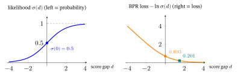

4 Loss Functions & Regularizers
From Graphs to LightGCN and Self-Supervised & Contrastive Learning keep saying “trained with a loss plus a regularizer.” From Graphs to LightGCN §15 states the objective of LightGCN (a graph-based recommender model; He et al., 2020): the Bayesian Personalized Ranking (BPR) loss of §9 plus an L2 penalty on the size of the model’s parameters (§5.1) — and points here for the rest. This chapter builds those two words from absolute zero — first for all of machine learning (ML), then narrowing to recommendation. After this chapter, the loss/regularizer lines in every other chapter should read like plain English.
What this chapter assumes: school algebra and a calculator, plus three earlier chapters if their ideas are not yet second nature. Read the Linear-Algebra primer (chapter 1, Linear Algebra for Machine Learning) for the length of a vector (its §1) and cosine similarity (its §4) that §2 and §5 use, and for the transpose, identity matrix and determinant (its §2) that §5.1 and §11 use, and the singular value decomposition (its §6) that §11 touches.
Read the Calculus primer (chapter 2, Calculus for Machine Learning) for the chain rule and the sigmoid’s slope (its §3) that §2.3 and §9 use, the gradient and its contour lines (its §4), the gradient descent that §3 uses (its §5) and convexity (its §6); and the Probability primer (chapter 3, Probability & Statistics for Machine Learning) for the distributions and the sigmoid that §2 uses, the entropy and Kullback–Leibler (KL) divergence of its §7 that §2.3 recaps, and for the likelihood / prior / posterior / maximum a posteriori (MAP) ideas that §6 uses. (Other chapters cite this one by its title, Loss Functions & Regularizers.)
Part A — The general machine-learning picture
1. What is a loss function? (and why “loss”?)
Suppose you are learning to guess how long a bus ride takes, and after every guess someone tells you how far off you were. To improve, you need one number for “how bad were my guesses so far?”, and a way to make it smaller. A machine-learning model works the same way: it is a function with adjustable numbers (parameters, written \(\theta\)) that training learns from the data, and training means choosing \(\theta\). The single number that says “how bad is the current \(\theta\)?”, which we then make as small as possible, is the loss.
A loss function \(\mathcal{L}(\theta)\) maps the current parameters to a single real number measuring how badly the model’s predictions disagree with the data. Training = minimizing it.
Worked example. Take one training point: the input is \(x=2\) and the true value is \(y=6\). The model has one parameter, \(\theta=w\), and predicts \(\hat y=w\cdot x\) (§3 trains exactly this model). Score three values of the parameter by the squared miss \((\hat y-y)^2\):
| the parameter \(w\) | prediction \(\hat y=2w\) | loss \((\hat y-6)^2\) | what it means |
|---|---|---|---|
| bad: \(1\) | \(2\) | \(16\) | far from \(6\): a large loss, so \(w\) needs to move |
| better: \(2.6\) | \(5.2\) | \(0.64\) | close: a small loss, so little left to fix |
| perfect: \(3\) | \(6\) | \(0\) | on target: nothing left to fix |
Why is it called loss?
The word comes from statistical decision theory (Abraham Wald, 1930s–40s; Wald, 1939). There, a loss function quantifies the penalty you incur for a wrong decision — exactly as in everyday English: a bad estimate makes you “lose” something (money, accuracy). Machine learning (ML) borrowed the term wholesale: predict 4 stars when the truth is 1, and you have “lost” 3 stars’ worth of accuracy.
The pile of near-synonyms (and their shades of meaning)
You will see several words for almost-the-same thing. They differ only in emphasis:
| Word | Where it came from | Shade of meaning |
|---|---|---|
| Loss | decision theory (Wald) | penalty for one wrong prediction |
| Cost | optimization / control | often the total loss summed/averaged over the whole dataset |
| Error | everyday English: the gap between a guess and the truth | stresses “distance from the right answer” |
| Objective | optimization | the most neutral word — the function you optimize (could be min or max) |
| Risk | decision theory (Wald); made central to ML by Vapnik’s empirical risk minimization (Vapnik, 1991; defined just below) | the expected loss over the true data distribution |
| Criterion | code: the usual variable name for the loss object in PyTorch, a popular machine-learning software library | just the chosen loss object in code |
One of these deserves a real definition because it appears constantly:
- Empirical Risk. We cannot average the loss over the true distribution (we don’t have it), so we average over the training sample. That sample-average is the empirical risk, and minimizing it is Empirical Risk Minimization (ERM) — the formal name for “fit the training data.” (Three ratings missed by \(0.5\), \(-1\) and \(0\) have an empirical risk of \(0.42\) under squared loss, worked below.) Empirical = “from observed data”; risk = “expected loss.” Most supervised training — learning from examples that each come with their correct answer, the \(y_n\) below (a film paired with its true rating, \(4\)) — is ERM plus a regularizer (§4). (Self-supervised learning, met in §11, instead invents its training task from unlabeled data, with no human-supplied answers.)
\[ \underbrace{\hat{R}(\theta)}_{\text{empirical risk}} \;=\; \frac{1}{N}\sum_{n=1}^{N} \ell\big(\hat{y}_n(\theta),\, y_n\big), \]
where \(\ell\) is the per-example loss (lowercase \(\ell\)), \(\hat{y}_n\) the prediction, \(y_n\) the truth. The capital \(\mathcal{L}\) or \(\hat{R}\) is the average over all \(N\) examples. The book says loss for both; the letter tells which: \(\ell\) for one example, \(\mathcal{L}\) for the average over the data (the table’s cost). For example, three ratings whose predictions miss by \(0.5\), \(-1\) and \(0\) have per-example squared losses \(0.25\), \(1\) and \(0\), so the empirical risk is \((0.25+1+0)/3=0.4167\approx0.42\) — a single number for the whole sample, which is the number training lowers. (In the recommendation sections \(\mathcal{L}\) is written as a sum over the sampled terms; dividing by their number rescales \(\lambda\), not the minimizer.)
Takeaway. A loss turns “how wrong are these parameter values?” into one number; the empirical risk averages it over the training data; training searches for the parameter values that make it small. Later sections change which number is measured (§2) and what is added to it (§4).
2. The taxonomy of losses (and the name of each)
A recommender is asked three different kinds of question about the same user. How many stars will Ann give this film? — a number. Will she click it? — yes or no. Which of these films will she pick? — a choice among many. One formula cannot score all three fairly: a miss of \(0.5\) stars, a wrong click prediction and a wrong pick are different kinds of mistake, so each kind gets its own loss. Which loss you pick is decided by what kind of thing you are predicting.
| What is predicted | Example question | Loss family | Section |
|---|---|---|---|
| a number | stars Ann will give | regression | §2.1 |
| a label | click or no click | classification | §2.2–§2.3 |
| a distribution or a similarity | which film she picks from many; which items fit together | distribution and contrastive (learning by comparing a match against mismatches) | §2.4 |
Which log? Here and throughout this chapter, \(\log\) means the natural logarithm \(\ln\) (base \(e\approx2.718\)), so a loss built from a log (cross-entropy and its relatives, from §2.2 on) is measured in nats. Information theory often uses \(\log_2\) instead, measured in bits; the two differ only by a constant factor (a value in bits is \(1/\ln 2\approx1.443\) times the same value in nats), and this chapter says bits only when it means base 2. On a calculator, use the ln key — the log key is base 10.
2.1 Regression losses — predicting a number
Used when the target \(y\) is continuous (a temperature, a price, a 1–5 rating). Write the residual \(r=\hat y-y\) (prediction minus truth); as a running example, suppose you predict \(\hat y=4.5\) for a true rating \(y=4\), so \(r=0.5\).
Mean Squared Error (MSE) / “squared loss” / “L2 loss”.
\[ \ell_{\text{MSE}} = (\hat{y}-y)^2, \qquad \mathcal{L}_{\text{MSE}} = \frac{1}{N}\sum_n (\hat{y}_n-y_n)^2. \]
- Per component: \(\hat y-y\) is the residual \(r\); squaring makes the penalty grow with the square of the miss and discards the sign; \(\tfrac1N\sum_n\) averages over the \(N\) examples. (Running example: \(r^2=0.5^2=0.25\).)
- Name: literally the mean of the squared errors. Why “L2 loss”? The L2 norm of a vector is its ordinary length, \(\sqrt{v_1^2+v_2^2+\cdots}\) (Linear-Algebra primer §1). Summed over the examples, \(\sum_n(\hat y_n-y_n)^2\) is the squared L2 norm of the vector of residuals — its length with the square root dropped. (§5.1 meets the same norm again, as a regularizer.)
- The squaring punishes a big miss far more than a small one (being off by 4 costs 16, not 4) — so MSE is sensitive to outliers. The figure The shapes of the losses (§2.2) draws the whole parabola.
- Why squared and not, say, to the 4th power? Because of a deep fact we prove in §6: squared error is what you get if you assume the noise in your data is Gaussian (bell-curve), with the same spread for every point. Least squares (Legendre, 1805; Gauss’s probabilistic justification, 1809) is the classic fitting rule of statistics; fitting by the least sum of absolute errors (the mean absolute error below) is older still (Boscovich, 1757).
Mean Absolute Error (MAE) / “L1 loss”.
\[ \ell_{\text{MAE}} = |\hat{y}-y|, \qquad \mathcal{L}_{\text{MAE}} = \frac{1}{N}\sum_n |\hat{y}_n-y_n|. \]
- Per component: the bars \(|\cdot|\) (absolute value) drop the sign, so the penalty grows only linearly with the miss (the V in §2.2’s figure The shapes of the losses); \(\tfrac1N\sum_n\) averages over the \(N\) examples. (Running example: \(|r|=|0.5|=0.5\).)
- Name: mean of the absolute errors. Why “L1 loss”? The L1 norm of a vector is the sum of its entries’ absolute values (Linear-Algebra primer §1), so \(\sum_n|\hat y_n-y_n|\) is the L1 norm of the vector of residuals. On §1’s three residuals \(0.5,-1,0\): L1 norm \(0.5+1+0=1.5\), L2 norm \(\sqrt{1.25}=1.118\), whose square \(1.25\) is the sum of squared errors.
- Being off by 4 costs 4, not 16 → robust to outliers, but the kink at 0 makes it non-differentiable there: the slope jumps from \(-1\) to \(+1\), so at exactly \(0\) you use a subgradient — any stand-in slope between \(-1\) and \(+1\) (Calculus primer §3). It corresponds to Laplace noise and targets the median rather than the mean.
Why MAE “targets the median”. Those last two claims are the whole reason to reach for MAE, so both are worth unpacking. Ask each loss the simplest possible question: if you had to predict one number \(c\) for a whole set of values \(y_1,\dots,y_N\), which would it pick? Take the derivative of each total with respect to \(c\). For the absolute value, each term \(\lvert c-y_n\rvert\) has slope \(+1\) when \(c>y_n\) (raising \(c\) moves it further from \(y_n\)) and \(-1\) when \(c<y_n\); adding those up gives (the number of points below \(c\)) minus (the number above \(c\)), written with \(\#\) for “how many”: \[ \frac{d}{dc}\sum_n (c-y_n)^2 \;=\; 2\sum_n (c-y_n), \qquad \frac{d}{dc}\sum_n \lvert c-y_n\rvert \;=\; \#\{y_n<c\} \;-\; \#\{y_n>c\}. \]
Setting the first to zero gives \(\sum_n(c-y_n)=0\), i.e. \(c=\bar y\) — the mean. The second does not measure anything; it counts. It is negative while more points lie above \(c\) than below (so pushing \(c\) up lowers the total), positive once more lie below, and it changes sign exactly where the two counts balance — the median. (For even \(N\) any value between the two middle points is a minimizer: there, as many points lie below \(c\) as above, the counting slope is \(0\), and the total is flat — for \(1,2,3,4\) it is \(4\) at every \(c\) from \(2\) to \(3\). The flat stretch comes from the same straight-line pieces that give MAE its kink; squared error, curved everywhere, always has exactly one minimizer.)
The contrast lives in what each derivative is made of. The squared version carries every residual \(c-y_n\) at its full size, so a point far away pulls hard and drags \(c\) toward itself. The absolute version keeps only its sign: every point casts exactly one vote, and a point \(100\) away votes no louder than a point \(1\) away. That is outlier-robustness in one line.
A rating that was logged wrong. Five ratings for one item: \(3,\,4,\,4,\,5,\,20\) — the last a slipped decimal for \(2.0\). The mean is \(36/5=7.2\); the median is \(4\). Score both candidate constants, and a neighbour of the median on each side, under both losses:
| constant \(c\) | \(\sum_n\lvert c-y_n\rvert\) | \(\sum_n (c-y_n)^2\) |
|---|---|---|
| \(3\) | \(21\) | \(295\) |
| median \(=4\) | \(18\) | \(258\) |
| \(5\) | \(19\) | \(231\) |
| mean \(=7.2\) | \(25.6\) | \(206.8\) |
Each loss does prefer its own summary (the lowest total in its column: \(18\) for MAE at the median, \(206.8\) for MSE at the mean), exactly as the derivatives predict. (The counting slope shows it for MAE: at \(c=3.5\) one rating lies below and four above, slope \(1-4=-3\), still downhill; at \(c=4.5\) it is \(3-2=+1\), already uphill; so the bottom is in between, at the median \(4\).) The total of absolute misses is a single valley with corners only at the ratings, so its values at \(3\), \(4\) and \(5\) (\(21\), \(18\), \(19\)) already show the bottom at the median.
But look at what MSE chose: \(7.2\) is higher than every clean rating in the set, and off the \(1\)–\(5\) scale altogether. One bad row moved the squared-loss prediction into nonsense; the absolute-loss prediction did not move at all, because the \(20\) only ever cast one vote. (With the \(2.0\) logged correctly the mean is \(3.6\) and the median \(4\): the slip moved the mean from \(3.6\) to \(7.2\) and left the median at \(4\).)
Why “Laplace noise”. §6 shows that assuming Gaussian noise and minimizing the negative log-likelihood is squared error. Run that same recipe with the Laplace density \(p(r)\propto e^{-\lvert r\rvert/b}\) (Probability primer §2, where it is drawn against the Gaussian), with spread \(b\), and the \(-\log\) leaves \(\ln(2b)+\lvert r\rvert/b\) — MAE, scaled by \(1/b\) and shifted by a constant that training cannot change. Same machinery, different assumption about the errors: MSE says “errors are bell-shaped, a big one is shocking”; MAE says “errors have heavier tails than a bell curve, a big one is expected” (beyond three standard deviations, \(1.4\%\) against \(0.27\%\); Probability primer §2). Choosing between them is choosing which of those two sentences describes your data.
Huber loss — the compromise.
\[ \ell_\delta = \begin{cases} \tfrac12(\hat{y}-y)^2 & |\hat{y}-y|\le\delta \\[4pt] \delta\,|\hat{y}-y|-\tfrac12\delta^2 & \text{otherwise.}\end{cases} \]
- Name: after statistician Peter Huber (1964), a founder of robust statistics.
- Per component: below the threshold \(|r|\le\delta\) it is the smooth quadratic \(\tfrac12 r^2\) (MSE-like); above it, the linear \(\delta|r|-\tfrac12\delta^2\) (MAE-like). The \(-\tfrac12\delta^2\) is exactly what makes the two pieces meet without a jump at \(|r|=\delta\) (both equal \(\tfrac12\delta^2\) there). Their slopes match there too: the parabola \(\tfrac12r^2\) has slope \(r\), which equals \(\delta\) at \(r=\delta\), and the line has slope \(\delta\). So Huber is differentiable everywhere — the switch-over is a smooth seam, not a corner like MAE’s. The knob \(\delta\) (a value you choose by hand rather than learn from the data, called a hyperparameter) sets the switch-over: quadratic and differentiable near \(0\), linear and outlier-robust far out. (Running example, \(\delta=1\): \(\tfrac12 r^2=0.125\).)
- How to pick \(\delta\): it is the residual size at which you stop trusting a point as “clean” and start treating it as an outlier, so set it on the scale of a typical residual. The robust-statistics default is \(\delta\approx1.345\,\hat s\) (often quoted rounded, as \(1.35\)), where \(\hat s\) is a robust estimate of the residuals’ spread (their standard deviation). This \(1.345\) is the value that keeps \(\approx95\%\) of least-squares’ efficiency when the noise really is Gaussian (Fox & Weisberg, 2018): it needs only about \(5\%\) more data than MSE to estimate as precisely (\(1/0.95\approx1.05\)).
- Estimating \(\hat s\): typically \(\hat s=\text{MAD}/0.6745\), where the median absolute deviation (MAD) is the median of \(|r-\text{median}(r)|\) (not to be confused with MAE).
- Why \(0.6745\): it is the point below which \(75\%\) of a standard bell curve (mean \(0\), standard deviation \(1\)) lies, so exactly half of that curve sits within \(\pm0.6745\) of \(0\), which makes \(0.6745\) that curve’s own MAD; dividing by it rescales the MAD to match a Gaussian standard deviation.
- Worked number: take the five ratings \(3,4,4,5,20\) of §2.1, treat each rating’s distance from the median as a residual. The median is \(4\), the absolute deviations are \(1,0,0,1,16\), so \(\text{MAD}=1\), \(\hat s=1/0.6745=1.483\) and \(\delta\approx1.345\times1.483=1.99\approx2\) — a rating-scale number that treats the \(20\) as an outlier.
- Reading the knob: smaller \(\delta\Rightarrow\) more MAE-like (more robust; the bend sits closer to \(0\), still with no corner); larger \(\Rightarrow\) more MSE-like.
The knob \(\delta\) in numbers. Score two residuals, a small one (\(r=0.5\)) and an outlier (\(r=3\)), at three settings (a small \(\delta\) puts most residuals on the linear piece \(\delta|r|-\tfrac12\delta^2\), which grows like the MAE; a large one keeps them on the parabola, half the MSE):
| \(\delta\) | loss at \(r=0.5\) | loss at \(r=3\) | what it means |
|---|---|---|---|
| low: \(0.5\) | \(0.125\) | \(1.375\) | the outlier is already on the linear piece: its cost grows only linearly, \(1.375\) against half the MSE (\(4.5\)) |
| middle: \(1\) | \(0.125\) | \(2.5\) | a typical choice: the small residual is on the quadratic piece, the outlier on the linear one |
| high: \(3\) | \(0.125\) | \(4.5\) | both residuals are on the quadratic piece: the same as half the MSE (\(4.5\)) |

2.2 Classification losses — predicting a category
Used when \(y\) is a label (spam / not-spam; which of 10 digits).
Binary Cross-Entropy (BCE) / “log loss”.
\[ \ell_{\text{BCE}} = -\big[\, y\log\hat{p} + (1-y)\log(1-\hat{p})\,\big], \qquad y\in\{0,1\}, \]
where \(\hat{p}\in(0,1)\) is the model’s predicted probability of class 1. It usually comes from a sigmoid \(\sigma(z)=\tfrac{1}{1+e^{-z}}\) applied to the model’s raw score \(z\), called the logit (Probability primer §3); the sigmoid squashes any real number into \((0,1)\) (\(\sigma(0)=0.5\), \(\sigma(2)=0.88\), \(\sigma(-2)=0.12\)).
- Per component (a switch, like the Bernoulli in Probability primer §2): the label \(y\in\{0,1\}\) selects which term lives — for a positive (\(y{=}1\)) only \(-\log\hat p\) survives, for a negative (\(y{=}0\)) only \(-\log(1-\hat p)\). Each is the surprise at the right answer: \(-\log\) of the probability the model gave it (a probability of \(0.9\) costs \(0.105\) nats, one of \(0.1\) costs \(2.303\); §2.3 defines it). (Running example: the model gives Ann’s click \(\hat p{=}0.7\); she clicks, \(y{=}1\): \(-\ln 0.7 = 0.357\) nats.)
- Why “cross-entropy”? From information theory (Shannon). The entropy of a distribution is the average number of bits (binary digits, counted with \(\log_2\)) needed to encode samples from it. The cross-entropy \(H(p,q)\) is the average length needed if you encode samples from the true \(p\) using a code built for a different distribution \(q\) (here \(p\) is the true distribution — for BCE, the label \(y\) — and \(q\) is the model’s, the \(\hat p\) above). Minimizing it drives your predicted \(q\) toward the truth \(p\) — “cross” because it is between two distributions. (§2.3 gives the three facts the loss argument needs; the full build is in the Probability primer §7.)
- Why “log loss”? It is the negative log-likelihood of a Bernoulli (coin-flip) model — see §6. The log means a confident wrong answer (\(\hat{p}\to0\) when \(y=1\)) is punished enormously (\(-\log 0 = +\infty\)). No single paper introduced the loss: fitting a logistic model to binary outcomes by this likelihood is classical in statistics (Cox, 1958).
Worked, end to end (both labels). A logit \(z=0.847\) (it is \(\ln\frac{7}{3}\), chosen so that the probability is round) gives \(\hat p=\sigma(0.847)=0.70\). If she clicks, the truth is positive (\(y{=}1\)): \(\ell=-\ln 0.70=0.357\). If she does not click, the truth is negative (\(y{=}0\)); at the same confidence \(\hat p=0.70\): \(\ell=-\ln(1-0.70)=-\ln 0.30=1.204\) — over \(3\times\) larger, because the model placed \(0.70\) on the wrong class. BCE rewards confidence only when it is correct; confident-and-wrong is exactly what the \(-\log\) punishes.
Categorical Cross-Entropy (CE) — the \(K\)-class generalization, paired with softmax: \[ \ell_{\text{CE}} = -\sum_{c=1}^{K} y_c \log \hat{p}_c, \qquad \hat{p}_c = \frac{e^{z_c}}{\sum_{k} e^{z_k}}\ \text{(softmax)}. \]
- Per component (the one-hot collapse, Probability primer §7): the label \(y_c\) is \(1\) for the true class and \(0\) elsewhere, so the sum keeps a single term, \(\ell_{\text{CE}}=-\log\hat p_{\text{true}}\) — the surprise at the correct class; the \(\hat p_c\) come from the softmax.
- Why “softmax”? It is a soft (smooth, differentiable) version of argmax — the operation that returns which position holds the largest score (Probability primer §3). Instead of hard-picking the single largest score, it returns a probability distribution that leans toward the largest — a “soft maximum.” The name softmax, and its pairing with a cross-entropy score, come from Bridle (1989). This name returns in §10, in recommender systems (recsys for short).
Worked, three classes. Raw scores \(z=[2,\,1,\,0]\) for (cat, dog, bird). The exponentials are \(e^{2}=7.389,\ e^{1}=2.718,\ e^{0}=1\), summing to \(11.107\), so the softmax gives \(\hat p=[0.665,\ 0.245,\ 0.090]\) — three non-negative numbers that add to \(1\), a probability distribution, not a single probability. If the truth is cat, only that entry survives: \(\ell=-\ln0.665=0.408\). If the truth is dog, the same scores cost \(-\ln0.245\approx1.41\), more than \(3\times\) as much — the model put its largest score on the wrong class. (Argmax would answer cat and nothing else; softmax gives \([0.665,0.245,0.090]\).)
Hinge loss — the loss of the support vector machine (SVM), a classic classifier that separates two classes with the widest possible gap between them (on two clouds of points it draws the line equally far from the closest points of the two classes, the support vectors). (The soft-margin SVM it comes from is Cortes & Vapnik, 1995; the name came later, from Gentile & Warmuth, 1998, who call it the “linear hinge loss”.)
\[ \ell_{\text{hinge}} = \max(0,\; 1 - y\cdot \hat{y}), \qquad y\in\{-1,+1\}. \]
- Per component: \(y\cdot\hat y\) is the margin (positive when the score \(\hat y\) has the same sign as the label \(y\in\{-1,+1\}\)); \(1-y\hat y\) is how far short of a safe margin of \(1\) you are; \(\max(0,\cdot)\) zeroes the loss once you clear it — so only not-yet-safe examples contribute. (Running example: for a positive, \(y=+1\), a score \(\hat y=0.4\) is on the right side but not yet safe — loss \(\max(0,\,1-0.4)=0.6\); a score \(\hat y=1.3\) clears the margin — loss \(\max(0,\,1-1.3)=\max(0,-0.3)=0\), and no gradient; a score \(\hat y=-0.5\) is on the wrong side: loss \(\max(0,\,1+0.5)=1.5\), the largest of the three.)
- Why “hinge”? Plot it. It is flat at zero once you are correct-with-margin, and to the left of the kink it rises as a straight ramp — the graph looks exactly like a door hinge. The kink is the hinge point. The flat region is the key idea: once an example is comfortably correct, it contributes no loss and no gradient.
Why a margin of \(1\). The \(1\) only fixes the unit of the score: doubling every score doubles every margin. The width of the gap between the classes is \(2/\lVert\mathbf w\rVert\) (between the lines \(\mathbf w^\top\mathbf x=+1\) and \(-1\)) for a linear score \(\mathbf w^\top\mathbf x\) (the entries of \(\mathbf w\) are its weights, the numbers that multiply the inputs), so small weights give a wide gap: \(1.41\) for \(\mathbf w=[1,1]\), \(0.71\) for \([2,2]\) — the L2 penalty of §5.1 keeps them small.
The logistic loss — BCE written on the margin. The figure below sets the regression losses of §2.1 side by side against the residual (left) and plots the classification losses against the margin \(m=y\hat y\) (right), so BCE needs rewriting in those terms. Write the label as \(y\in\{-1,+1\}\) and take \(\hat p=\sigma(\hat y)\), for the score \(\hat y\) (the raw score, the logit \(z\) of BCE above). For \(y=+1\), BCE is \(-\ln\sigma(\hat y)=\ln(1+e^{-\hat y})\); for \(y=-1\) it is \(-\ln\big(1-\sigma(\hat y)\big)=\ln(1+e^{\hat y})\). Both are \(\ln(1+e^{-y\hat y})=\ln(1+e^{-m})\) — the logistic loss, which is BCE itself, expressed through the margin. Check it on the worked case above: a positive with score \(0.847\) has margin \(m=0.847\) and \(\ln(1+e^{-0.847})=0.357=-\ln0.70\), its BCE.

Focal loss — cross-entropy for severe class imbalance (Lin et al., 2017), introduced for detecting objects in images; recommendation, with a few positives among a sea of negatives, is a natural candidate (a claim from practice, not tested here). It down-weights the easy examples the model already gets right: \[ \ell_{\text{focal}} = -(1-p_t)^{\gamma}\,\log p_t, \qquad p_t=\begin{cases}\hat p & \text{if } y=1,\\ 1-\hat p & \text{if } y=0.\end{cases} \]
Read \(p_t\) as “the probability the model gives the true class”, and \(\gamma\ge0\) as a knob. The bare \(-\log p_t\) is exactly BCE (for \(y=1\) it is \(-\log\hat p\), for \(y=0\) it is \(-\log(1-\hat p)\)); focal only multiplies it by the new factor.
The added factor \((1-p_t)^{\gamma}\) is the whole idea: for an easy, already-confident example (\(p_t\to1\)) it \(\to0\), muting that example so training focuses on the hard, still-wrong ones; \(\gamma=0\) recovers plain cross-entropy. With \(\gamma=2\), for instance: an easy example with \(p_t=0.9\) has cross-entropy \(-\ln0.9=0.105\) but focal loss \((1-0.9)^2\times0.105=0.01\times0.105=0.00105\) — \(100\times\) quieter — while a hard one with \(p_t=0.1\) keeps \((1-0.1)^2\times2.303=0.81\times2.303=1.865\) of its \(2.303\). An even example, \(p_t=0.5\), keeps a quarter of its loss: \(0.25\times0.693=0.173\). The factor \((1-p_t)^{\gamma}\) only falls as \(p_t\) rises, so three examples, hard, even and easy, show it heading to \(0\). (Why “focal”: it focuses the loss on the hard cases.)
The knob \(\gamma\) at three settings (the same two examples; losses in nats):
| \(\gamma\) | easy example, \(p_t=0.9\) | hard example, \(p_t=0.1\) | what it means |
|---|---|---|---|
| off: \(0\) | \(0.105\) | \(2.303\) | plain cross-entropy: the easy example still counts a little |
| middle: \(2\) | \(0.001\) | \(1.865\) | the easy one is nearly silent; the hard one keeps most of its loss |
| high: \(5\) | \(0.000001\) | \(1.360\) | even the hard example is damped, to \(0.59\times\) its cross-entropy (\(0.9^5=0.59\)) |
2.3 Why cross-entropy is the classification loss
§2.2 defined cross-entropy; here is why it is the natural loss for classification — the three facts information theory supplies (Shannon, 1948). (The Probability primer §7 builds entropy, cross-entropy, and the Kullback–Leibler divergence, abbreviated KL, from zero; here we recap just what the loss needs.)
Surprise (information content). How surprised should you be to observe an outcome of probability \(p\)? Define its information (or “surprise”) as
\[ I = -\log p. \]
Three facts about \(I\) are all the loss argument needs:
- \(I\) is a cost. A certain event (\(p=1\)) costs \(I=-\log 1 = 0\); a rare one costs a lot. With \(\log_2\) the unit is bits — a fair coin’s heads costs exactly \(1\) bit, and the rare tails of a 99/1 coin costs \(-\log_2 0.01 \approx 6.64\).
- Entropy \(H(p)=\mathbb{E}_{x\sim p}[-\log p(x)]=-\sum_x p(x)\log p(x)\) is fixed by the data. (Here \(\mathbb{E}_{x\sim p}[\cdot]\) is the expectation — the average over outcomes \(x\) drawn from \(p\), Probability primer §1.) It is the irreducible average cost of encoding samples from \(p\); nothing your model does can lower it.
- Cross-entropy \(H(p,q)=-\sum_x p(x)\log q(x)\) is what you pay instead when the data really comes from \(p\) but you built your code for \(q\) — and the two are linked by one identity:
\[ H(p,q) = \underbrace{H(p)}_{\text{unavoidable}} + \underbrace{D_{\text{KL}}(p\,\|\,q)}_{\ge\,0,\ \text{extra cost because } q\ne p}. \]
For example, with the truth \(p=[0.5,0.5]\) and a model \(q=[0.9,0.1]\) (call it the coin pair; §2.4 uses it again): \(H(p)=0.693\) nats (the \(1\) bit of fact 1, in natural-log units) and \(D_{\text{KL}}(p\|q)=0.511\) (the KL divergence, defined just below), so \(H(p,q)=1.204\); directly, \(-0.5\ln0.9-0.5\ln0.1=0.053+1.151=1.204\) ✓.
Here \(D_{\text{KL}}(p\|q)=\sum_x p(x)\log\frac{p(x)}{q(x)}\) is the KL divergence (§2.4 uses it as a loss in its own right); on the coin pair, \(0.5\ln\frac{0.5}{0.9}+0.5\ln\frac{0.5}{0.1}=-0.294+0.805=0.511\). Why the identity holds: split the log of the ratio, \(\log\frac{p(x)}{q(x)}=\log p(x)-\log q(x)\), and the sum separates into the two quantities above,
\[ D_{\text{KL}}(p\,\|\,q)=\underbrace{-\sum_x p(x)\log q(x)}_{H(p,q)}\;-\;\underbrace{\Big(-\sum_x p(x)\log p(x)\Big)}_{H(p)}, \]
so moving \(H(p)\) to the other side gives the identity. And \(D_{\text{KL}}(p\|q)\ge 0\), with equality if and only if (mathematicians write iff) \(q=p\) — a fact called Gibbs’ inequality. Since the data fixes \(p\) — so \(H(p)\) is a constant you cannot change — minimizing cross-entropy over your model \(q\) is exactly minimizing \(D_{\text{KL}}(p\|q)\), i.e. making your predicted distribution match the truth. That one sentence is why cross-entropy is the loss.
Specializing to classification. In a \(K\)-class problem the true label is a one-hot distribution \(p\) — all mass on the correct class \(c^\star\) (e.g. \(p=[1,0,0]\) for “cat”, in the order cat, dog, bird of §2.2). The sum then collapses:
\[ H(p,q) = -\sum_c p_c \log q_c = -\log q_{c^\star}. \]
So cross-entropy for one labeled example is just the negative log of the probability the model assigned to the correct class. And since \(H(p)=0\) for a one-hot \(p\), here cross-entropy \(=\) KL \(=\) the negative log-likelihood of §6 — three names, one number.
Worked numbers (true class = cat; natural log, so units are nats):
| model’s \(q_{\text{cat}}\) | loss \(=-\ln q_{\text{cat}}\) | verdict |
|---|---|---|
| \(0.99\) | \(0.010\) | confident & right → almost no loss |
| \(0.70\) | \(0.357\) | right but unsure → small loss |
| \(0.10\) | \(2.303\) | confident & wrong → large loss |
The \(-\log\) shape is the whole point: confident-correct is nearly free, confident-wrong is punished brutally (the figure below plots the curve with the table’s three rows). And on average it rewards honesty: if \(70\) of \(100\) look-alike photos are cats, the average loss \(-(0.7\ln q+0.3\ln(1-q))\) is \(0.693\) at \(q=0.5\), \(0.632\) at \(q=0.6\), \(0.611\) at \(q=0.7\), \(0.639\) at \(q=0.8\) and \(0.765\) at \(q=0.9\), lowest exactly at the true \(70\%\) (the slope \(-p/q+(1-p)/(1-q)\) is \(0\) only at \(q=p\)). That is what pushes the model toward calibrated probabilities: ones that mean what they say, so that of all the times the model says \(0.70\), about \(70\%\) really are that class. (This holds for the best model on the data it is trained on; a large trained network can still come out over-confident on new data, a finding from practice not tested here.)

Why not just use accuracy, or MSE?
- Accuracy has no usable gradient — it is flat, then jumps; you cannot descend on it (two classes, true class cat: as \(q_{\text{cat}}\) rises from \(0.3\) to \(0.45\), accuracy stays \(0\) while the loss falls from \(1.204\) to \(0.799\); only crossing \(0.5\) changes accuracy, and at \(0.55\) it is \(1\) while the loss, \(0.598\), keeps falling smoothly). Accuracy here can only be \(0\) or \(1\), so one value on each side of \(0.5\) shows its whole step. Cross-entropy is its smooth, differentiable surrogate (a stand-in that falls when accuracy would rise, and can be descended).
- Minimizing it gives the maximum-likelihood estimate (MLE). Cross-entropy is the negative log-likelihood of the data under a Bernoulli/categorical model (§6), so minimizing it = maximizing that likelihood — the probabilistically correct objective, not an arbitrary one. (The MLE itself is the parameter value \(\theta\) you land on, not the loss.)
- Clean gradient with softmax. The gradient of softmax-cross-entropy with respect to the scores \(z\) is beautifully simple: \(\partial\ell/\partial z = q - p\) (“prediction minus truth”). MSE placed on top of a sigmoid/softmax instead saturates (goes flat, as shown below) — its gradient vanishes just when the model is confidently wrong, so learning stalls. Cross-entropy does not.
Point 3, shown here for \(K=2\) classes (the \(K\)-class case follows from the same chain rule). (In §2.2’s letters, \(p\) here is the label \(y\) and \(q\) is the prediction \(\hat p\).) Take one positive example (\(p=1\)) with \(q=\sigma(z)\), and use \(\sigma'(z)=\sigma(z)\big(1-\sigma(z)\big)\) (Calculus primer §3). Cross-entropy gives \(\frac{d}{dz}\big[-\ln\sigma(z)\big]=-\frac{\sigma(1-\sigma)}{\sigma}=\sigma(z)-1=q-p\). MSE on the probability gives \(\frac{d}{dz}\big(\sigma(z)-1\big)^2=2\big(\sigma(z)-1\big)\,\sigma(z)\big(1-\sigma(z)\big)\).
Now let the model be confidently wrong, \(z=-5\), so \(\sigma(-5)=0.0067\): cross-entropy’s gradient is \(0.0067-1=-0.993\), a strong push, while MSE’s is \(2(-0.9933)(0.0067)(0.9933)=-0.013\) — about \(75\times\) weaker (at \(z=0\): \(-0.5\) against \(-0.25\), \(2\times\); at \(z=-0.7\): \(-0.668\) against \(-0.296\), \(2.3\times\); at \(z=-2\): \(-0.881\) against \(-0.185\), \(4.8\times\)). MSE’s gradient carries the factor \(\sigma(1-\sigma)\), the sigmoid’s slope, which is nearly \(0\) where the S-curve has gone flat; that flattening-out is what saturates means. For \(z\) below about \(-0.7\) (where MSE’s gradient peaks at \(0.30\)), cross-entropy’s push keeps growing toward \(1\) while MSE’s dies toward \(0\).
Binary case ties back to the sigmoid. With \(K=2\) classes, softmax over scores \((z_0,z_1)\) gives \(q_1 = \tfrac{e^{z_1}}{e^{z_0}+e^{z_1}} = \sigma(z_1-z_0)\) (divide top and bottom by \(e^{z_1}\)) — a sigmoid. Substituting into categorical cross-entropy recovers the BCE formula of §2.2 exactly: with scores \((0,\,0.847)\), \(q_1=\sigma(0.847)=0.70\) and the loss for class 1 is \(0.357\), §2.2’s BCE. So BCE is cross-entropy with two classes, and the sigmoid is softmax with two classes.
One-line takeaway. Classification asks the model for a probability distribution \(q\) over classes; cross-entropy measures the total coding cost of using \(q\) when the truth is \(p\) — the unavoidable \(H(p)\) plus the KL divergence (\(1.204=0.693+0.511\) on the coin pair) — and equals the negative log-likelihood — so minimizing it simultaneously matches the truth, maximizes likelihood, and trains with a clean non-saturating gradient. That triple coincidence is why it is the default classification loss.
2.4 Distribution & contrastive losses (the modern additions)
Two questions remain that are not about one label: how far is a model’s whole probability distribution from the truth, and does this item belong with that one? Each gets a loss of its own.
KL divergence — distance-ish between two distributions (the extra cost of §2.3, now as a standalone object).
\[ D_{\text{KL}}(p\,\|\,q) = \sum_x p(x)\log\frac{p(x)}{q(x)}. \]
- Why “divergence” and not “distance”? Because it is not symmetric: \(D_{\text{KL}}(p\|q)\ne D_{\text{KL}}(q\|p)\); a true distance gives the same value from either end. For example, with \(p=[0.5,\,0.5]\) and \(q=[0.9,\,0.1]\): \(D_{\text{KL}}(p\|q)=0.5\ln\frac{0.5}{0.9}+0.5\ln\frac{0.5}{0.1}=-0.294+0.805=0.511\), but \(D_{\text{KL}}(q\|p)=0.9\ln\frac{0.9}{0.5}+0.1\ln\frac{0.1}{0.5}=0.529-0.161=0.368\) — swap the two distributions and the “distance” changes. Kullback–Leibler, after the two authors (1951). Core to variational autoencoders (VAEs) — §11’s models, which squeeze each input into a short random code and rebuild the input from it — and to knowledge distillation (training a small model to copy a big model’s predicted probabilities, with KL measuring the mismatch; Probability primer §7 works one: KL \(0.085\) nats).
InfoNCE (information noise-contrastive estimation, decoded below) — the contrastive-learning workhorse. Contrastive learning trains embeddings (Linear-Algebra primer §1) — the lists of numbers (vectors) a model learns to represent each user, item or image, for example the two-number vector \([0.8,\,0.6]\), the positive in the figure below — by comparison: make two views of the same thing (for example, two slightly different crops of the same photo, or the same user’s history with a few interactions randomly hidden), and teach the model that the two views belong together while other things do not.
\[ \ell_{\text{InfoNCE}} = -\log\frac{\exp(\text{sim}(\mathbf{z},\mathbf{z}^+)/\tau)}{\exp(\text{sim}(\mathbf{z},\mathbf{z}^+)/\tau)+\sum_{k}\exp(\text{sim}(\mathbf{z},\mathbf{z}_k)/\tau)}. \]
- Symbols: \(\mathbf{z}\) is the anchor (the embedding of one view), \(\mathbf{z}^+\) its positive (the other view of the same thing, or a matching item), the \(\mathbf{z}_k\) are negatives (embeddings of other things), \(\text{sim}(\cdot,\cdot)\) is a similarity (usually the cosine of the angle between the two vectors, Linear-Algebra primer §4), and \(\tau>0\) is the temperature. The denominator runs over the positive and all the negatives, so the fraction is the positive’s share of the total — a number between \(0\) and \(1\), which makes the loss \(\ge0\). The expression is exactly a softmax cross-entropy (softmax from Probability primer §3, cross-entropy from its §7) that pulls the anchor toward \(\mathbf{z}^+\) and away from the crowd.
Worked number. Take an anchor \(\mathbf{z}\) with cosine similarity \(0.8\) to its positive \(\mathbf{z}^+\) and \(0.4\) and \(0.0\) to two negatives, with temperature \(\tau=0.2\). Divide each similarity by \(\tau\) (giving \(4.0,\,2.0,\,0.0\)), exponentiate (\(e^{4}=54.6,\ e^{2}=7.39,\ e^{0}=1\)), and the positive’s softmax share — hence the loss — is
\[ \frac{54.6}{54.6+7.39+1}=\frac{54.6}{62.99}=0.867,\qquad \ell_{\text{InfoNCE}}=-\ln 0.867=0.143. \]
The positive is the most similar, so it already owns most of the softmax mass and the loss is small. If its similarity collapsed to \(0.0\) (level with the weaker negative, behind the stronger one), its share would fall to \(1/(1+7.389+1)=1/9.389=0.1065\) and the loss would jump to \(-\ln 0.1065=2.24\) — the gradient then pulls \(\mathbf{z}\) hard back toward \(\mathbf{z}^+\) and away from the crowd (the gradient on the positive’s similarity, \((q-1)/\tau\) with \(q\) the positive’s softmax share, grows from \(-0.67\) to \(-4.47\), almost \(7\times\) stronger). (Smaller \(\tau\) sharpens this: it magnifies the gap between the positive and the near-miss negatives.)
The temperature is a knob worth seeing at three settings. Keep the same similarities (\(0.8,\,0.4,\,0.0\)) and compare the loss when the positive is clearly ahead with the loss when it falls to \(0.0\), behind one negative:
| \(\tau\) | loss, positive ahead (\(0.8\)) | loss, positive at \(0.0\) | what it means |
|---|---|---|---|
| high: \(1\) | \(0.751\) | \(1.250\) | soft: falling behind costs only \(1.7\times\) as much, so the signal is weak |
| middle: \(0.2\) | \(0.143\) | \(2.240\) | clear: falling behind costs about sixteen times as much |
| low: \(0.05\) | \(0.000336\) | \(8.001\) | harsh: falling behind costs about \(24{,}000\times\) as much (\(8.001\) against \(0.000336\)), so one near-miss outweighs up to about \(24{,}000\) clear wins in its batch (the examples of one update) |
Why the name. The “NCE” half is noise-contrastive estimation, from Gutmann and Hyvärinen (2010) — learn by contrasting real data against noise. “Info”: minimizing it pushes up a lower bound (a result we take as given) on the mutual information between the two views — how much knowing one view tells you about the other (Probability primer §7). The InfoNCE form is from van den Oord et al. (2018), who named their method Contrastive Predictive Coding (CPC). So: contrast a positive \(\mathbf{z}^+\) against a crowd of noise negatives \(\mathbf{z}_k\), and you push up a lower bound on the information the two views share (with \(N\) candidates, the positive and its negatives; this \(N\) is not §1’s number of examples; the bound is \(\ln N-\ell\); if every example scored like the worked number above, \(\ln 3-0.143=0.956\) nats).
You will meet this loss again as NT-Xent (normalized temperature-scaled cross-entropy), the name used by SimCLR — a 2020 method that learns image representations contrastively (Chen et al., 2020). This is the bridge to Self-Supervised & Contrastive Learning.
The figure below draws the worked anchor, its positive and the two negatives on the unit circle; its right panel previews §11’s uniformity.

In practice. Never code these formulas literally — the raw \(\exp\) and \(\log\) can overflow or underflow: produce numbers too large (like \(e^{1000}\)) or too close to \(0\) for the computer to store. Use the numerically stable forms your framework ships. For BCE and BPR (Bayesian Personalized Ranking, the ranking loss of §9), \(-\ln\sigma(x)=\ln(1+e^{-x})\), a function called softplus\((-x)\) — call
torch.nn.functional.logsigmoid(x)(writtenF.logsigmoid(x)below, withFthe usual name for that module) or the equivalent rather thantorch.log(torch.sigmoid(x)). On §2.2’s worked case, softplus\((-0.847)=\ln(1+e^{-0.847})=0.357\), its BCE. The literal route fails on a confidently wrong score: in 32-bit floats \(\sigma(-200)\) rounds to \(0\) and its log is \(-\infty\), whileF.logsigmoid(-200)returns \(-200\) (a loss of \(200\)).For softmax cross-entropy and InfoNCE, the log of the denominator is computed by log-sum-exp with the max subtracted, \(\ln\sum_k e^{x_k}=M+\ln\sum_k e^{x_k-M}\) (take \(e^{M}\) out of every term), where the \(x_k\) are whatever sits in the exponents (the logits \(z_k\) of §2.2 for softmax cross-entropy, the \(\text{sim}/\tau\) values for InfoNCE — not the embeddings \(\mathbf{z}_k\) above) and \(M\) is the largest of them, so every exponent \(x_k-M\) is at most \(0\) and no term exceeds \(e^0=1\) —
F.cross_entropyandF.log_softmaxdo this for you. On the worked number, \(x=[4,2,0]\) and \(M=4\): \(4+\ln(1+e^{-2}+e^{-4})=4.143\), and the loss is \(4.143-4=0.143\), as before.
Which negatives? (the choice every sampled loss makes)
In implicit-feedback recommendation (clicks, plays or purchases instead of star ratings; §7, §9–§10) each training step pairs an item the user interacted with — a positive (the recommender’s counterpart of InfoNCE’s \(\mathbf z^+\)), pushed up — with one they did not — a negative, pushed down; which non-interacted items to use as those negatives is the question here.
For BPR and the other sampled losses (§9–§10), negatives are drawn by default uniformly at random from the items the user has not interacted with. That is cheap, but in a typical catalog most items are rarely seen (a pattern of real catalogs, not measured here), so most such draws are obscure items the model already scores low — easy, low-signal negatives: in BPR the push on a pair is weighted by (derived in §9) \(\sigma(-\text{gap})\), \(0.047\) when the positive already leads by \(3\), \(0.269\) when it leads by \(1\), and \(0.5\) when they are level.
A popular item is no more likely to be drawn than any other, and it is drawn less often overall, because the many users who have it as a positive never draw it as a negative. So training pushes each popular item up (as a positive) far more often than it pushes it down (as a negative): an item that \(900\) of \(1{,}000\) users interacted with is a positive \(900\) times per pass and a negative only for some of the other \(100\).
The opposite policies over-sample popular items: drawing negatives in proportion to popularity (§10 shows how this happens in practice, and the correction it needs), or choosing hard negatives — items the model currently scores high (say a film Ann never clicked, scored \(2.0\), above one she did click, scored \(0.5\)), which, after the asymmetry above, are plausibly often the popular ones (a claim from practice, not tested here). All of this bears on popularity bias — a recommender over-suggesting items that are already popular, like the item \(900\) of \(1{,}000\) users chose, at the expense of the long tail of rarely seen ones, like an item only \(3\) of them chose (invented for illustration) — which the contrastive uniformity term (§11) is meant to counter structurally.
The table to remember — which loss for which target. One row per loss of §2, each with the number it gives on that subsection’s running case.
| Loss | Predicts | Assumes | Its running number | Reach for it when |
|---|---|---|---|---|
| MSE | a number | Gaussian noise | \(r=0.5\Rightarrow0.25\) | targets are clean and numeric |
| MAE | a number | Laplace noise | \(r=0.5\Rightarrow0.5\) | a few targets are wrong or extreme |
| Huber (\(\delta=1\)) | a number | between the two | \(r=0.5\Rightarrow0.125\) | you want both |
| BCE | one yes/no | Bernoulli | \(y{=}1,\ \hat p{=}0.7\Rightarrow0.357\) | a click or no click |
| Categorical CE | one of \(K\) | categorical | \(z=[2,1,0]\), cat \(\Rightarrow0.408\) | one correct class among many |
| Hinge | a \(\pm1\) label | none (a margin rule) | \(\hat y=0.4\Rightarrow0.6\) | you want a safety margin |
| Focal (\(\gamma=2\)) | a rare yes/no | Bernoulli, reweighted | \(p_t=0.1\Rightarrow1.865\) | positives are rare |
| KL divergence | a distribution | none | \(p=[.5,.5],\,q=[.9,.1]\Rightarrow0.511\) | matching one distribution to another |
| InfoNCE (\(\tau=0.2\)) | a positive among negatives | a categorical choice (softmax) | sims \(0.8/0.4/0\Rightarrow0.143\) | learning embeddings by contrast |
3. Worked example A — one gradient step (so “minimize” is concrete)
How does a loss actually train anything? Picture standing on a hillside in fog: you cannot see the valley, but you can feel which way the ground slopes under your feet, so you take a small step downhill and feel again. Training does exactly that with the loss, a method called gradient descent (the generic engine is Calculus primer §5): compute the slope (gradient) of the loss with respect to each parameter, then step the parameter downhill.
\[ \theta \;\leftarrow\; \theta \;-\; \eta \cdot \frac{\partial \mathcal{L}}{\partial \theta}, \]
where \(\eta\) (the learning rate) scales the step: the step is \(\eta\) times the slope (below, \(0.1\times16=1.6\)). Let us do one step by hand.
Setup. The simplest model: \(\hat{y} = w\cdot x\) (one parameter \(w\), and no intercept — no added constant \(b\), so the line passes through the origin). One training point \((x=2,\ y=6)\) — so the true \(w\) is obviously \(3\). We start at \(w=1\) and use squared-error loss with learning rate \(\eta=0.1\). With one training point the total loss \(\mathcal L\) is this one example’s loss \(\ell\), and the one parameter \(\theta\) is \(w\).
Step 1 — predict. \(\hat{y} = 1\times 2 = 2.\)
Step 2 — loss. \(\ell = (\hat{y}-y)^2 = (2-6)^2 = (-4)^2 = 16.\)
Step 3 — gradient. By the chain rule, \(\dfrac{\partial \ell}{\partial w} = 2(\hat{y}-y)\cdot x = 2\times(-4)\times 2 = -16.\)
Step 4 — update. \(w \leftarrow 1 - 0.1\times(-16) = 1 + 1.6 = 2.6.\)
Check it improved. New prediction \(\hat{y}=2.6\times2=5.2\); new loss \((5.2-6)^2 = 0.64\). The loss fell from 16 → 0.64 in one step, and \(w\) moved 1 → 2.6, heading toward the true \(3\). That is the entire engine of training.
The learning rate \(\eta\) at four settings. Repeat steps 1–4 from \(w=1\) with different step sizes (one step each):
| \(\eta\) | new \(w=1+16\eta\) | prediction | loss after the step | what it means |
|---|---|---|---|---|
| low: \(0.01\) | \(1.16\) | \(2.32\) | \(13.54\) | safe but slow: the loss fell only from \(16\) to \(13.54\) |
| middle: \(0.1\) | \(2.6\) | \(5.2\) | \(0.64\) | the step used above: most of the gap closed |
| high: \(0.2\) | \(4.2\) | \(8.4\) | \(5.76\) | overshoots \(w=3\), yet the loss still fell, from \(16\) to \(5.76\) |
| too high: \(0.3\) | \(5.8\) | \(11.6\) | \(31.36\) | overshoots so far that the loss rose above \(16\) |
The loss after one step is \((32\eta-4)^2\), a parabola in \(\eta\) with its bottom at \(\eta=0.125\), so one value on each side of the bottom shows the turn.
This is all “minimize the loss” ever means: repeat steps 1–4 over the data until the loss stops falling. Everything else — fancier models, fancier losses — is detail bolted onto this loop. We reuse this exact machinery on BPR in §9.
4. What is a regularizer? (and why “regularization”?)
A student who memorizes last year’s exam answers scores perfectly on that exam and badly on this year’s. A model can do the same: it can fit its training examples exactly and still miss new ones. So minimizing the loss as hard as possible has a failure mode: the model can memorize the training data, including its noise, and then flop on new data. This is overfitting. (§5.2’s early-stopping table shows it in numbers: from training pass (epoch) \(4\) to \(6\) the training loss keeps falling, \(0.35\to0.22\), while the loss on held-out data climbs back, \(0.60\to0.69\).) A regularizer is a second term added to the objective that discourages overly complex or extreme solutions, trading a little training fit for better generalization (doing well on new data, not just the training set).
\[ \boxed{\;\mathcal{L}_{\text{total}}(\theta) \;=\; \underbrace{\mathcal{L}_{\text{task}}(\theta)}_{\text{fit the data}} \;+\; \underbrace{\lambda \cdot \mathcal{R}(\theta)}_{\text{stay simple}}\;} \]
\(\mathcal{R}(\theta)\) penalizes complexity; \(\lambda\ge 0\) (the regularization strength) sets how much we care. \(\lambda=0\) → pure fitting (risk overfit); \(\lambda\) large → very simple model (risk underfit). The table below shows how far it moves the answer: from \(w^\star=3\) at \(\lambda=0\) to \(1.5\) at \(\lambda=4\).
Worked example. Use the one-parameter model of §3 on its single point (\(x=2\), \(y=6\)) and penalize with \(\lambda w^2\). The best \(w\) for each \(\lambda\) is \(w^\star=12/(4+\lambda)\) (§5.1 derives it):
| \(\lambda\) | best \(w^\star\) | what it means |
|---|---|---|
| none: \(0\) | \(3\) | pure fitting: the point is matched exactly (with a noisy label it would fit the noise too) |
| middle: \(0.5\) | \(2.667\) | pulled a little toward \(0\), a small price in fit |
| large: \(4\) | \(1.5\) | pulled halfway to \(0\): a simple model that no longer fits the point |
The bias–variance trade-off — why regularizers exist
The deep reason overfitting happens, and why a regularizer helps, is the bias–variance trade-off — a central idea about generalization. In numbers (bias\(^2\) and variance are defined just below, and their sum, the total error, in the worked example after them): a flexible model whose predictions swing \(8\), \(12\), \(10\) around a true \(10\) has bias\(^2\) \(0\) and variance \(2.67\); a rigid one that always predicts \(9\) has bias\(^2\) \(1\) and variance \(0\), so it buys a drop of \(2.67\) in variance with \(1\) unit of bias\(^2\), total error \(1.00\) against \(2.67\).
Imagine retraining your model on many different training sets drawn from the same source, and watch its prediction at one fixed test input. Call the true value there \(f\); the label you are scored against there is a fresh one, \(y=f+\varepsilon\), drawn independently of the training sets (the noise \(\varepsilon\) averages to \(0\)). Call the model’s prediction \(\hat f\) — the \(\hat y\) of earlier, written this way to stress that it changes with the training set the model happened to see. Its expected squared error splits into three parts: \[ \underbrace{\mathbb{E}\big[(\hat f - y)^2\big]}_{\text{expected test error}} \;=\; \underbrace{(\text{bias})^2}_{\text{wrong on average}} \;+\; \underbrace{\text{variance}}_{\text{jumpy across training sets}} \;+\; \underbrace{\text{noise}}_{\text{irreducible}}, \]
\[ \text{bias}=\mathbb{E}[\hat f]-f,\qquad \text{variance}=\mathbb{E}\Big[\big(\hat f-\mathbb{E}[\hat f]\big)^2\Big],\qquad \text{noise}=\mathbb{E}\big[(y-f)^2\big]. \]
Here \(\mathbb{E}[\cdot]\) averages over the training sets (and, for the noise, over the random part of \(y\)), so \(\mathbb{E}[\hat f]\) is the model’s average prediction. With a handful of training sets it is a plain average: divide by the number of sets, as the Probability primer’s §1 variance does.
That plain average is what makes the three parts add up exactly. Take a model whose three retrained predictions at a point whose true value is \(10\) (no noise) are \(8\), \(12\) and \(10\) (model A of the table below): the average prediction is \(10\), so the bias is \(0\), and \((4+4+0)/3=2.67\) is both the average squared error and bias\(^2\) \(+\) variance. (The \(n-1\) of the primer’s §8 answers a different question — guessing a larger population’s spread from a sample. Use it here and the variance would read \(8/2=4.0\), and the parts would stop adding up.)
- Bias — how far the model is on average from the truth. High bias = the model is too simple to capture the pattern → underfitting (e.g. fitting a curve with a straight line).
- Variance — how much the fit jumps around when the training data changes. High variance = the model is too flexible and chases noise → overfitting (e.g. a wiggly high-degree polynomial through every point).
- Noise — irreducible randomness in the data; no model can beat it.

The dartboard picture. Bias = your darts cluster off-center (consistently wrong). Variance = your darts are scattered (inconsistent). You want both small, but pushing one down often pushes the other up — hence a trade-off. As model complexity (how freely the model can bend to the data: more weights, larger weights, or a smaller \(\lambda\)) rises, bias falls but variance grows; test error is typically a U-shape, lowest at the sweet spot in between.

A regularizer slides you along that trade-off: it deliberately adds a little bias (forcing simpler / smaller-weight solutions) to buy a larger drop in variance — landing nearer the U-curve’s bottom. That is the whole point of the \(\lambda\mathcal{R}\) term, and why \(\lambda\) too small overfits (high variance) while \(\lambda\) too large underfits (high bias).
Worked example — the trade in numbers. Suppose the true value is \(10\), and we look at a model’s predictions across three different training sets. (This toy has no noise term — the truth is known exactly — so total error \(=\) bias\(^2\) \(+\) variance.)
| Model | predictions | mean | bias\(^2\) | variance | total err = bias\(^2\)+var |
|---|---|---|---|---|---|
| A (flexible) | \(8,\;12,\;10\) | \(10\) | \(0\) | \(\tfrac{4+4+0}{3}=2.67\) | \(2.67\) |
| B (rigid) | \(9,\;9,\;9\) | \(9\) | \(1\) | \(0\) | \(1.00\) |
Model A is unbiased (mean \(=10\)) but high-variance (it swings \(8\)–\(12\)); model B is slightly biased (always \(9\)) but zero-variance. Here B’s total error (\(1.00\)) beats A’s (\(2.67\)) — a textbook case where accepting a little bias for much less variance wins. A regularizer, with its strength \(\lambda\) as the knob, moves model A toward model B: it accepts some bias to cut the variance. (The two models above are hypothetical; §5.1’s box What the penalty buys shows a real L2 penalty making this trade, with numbers: at \(\lambda=0.5\) the bias\(^2\) rises from \(0\) to \(0.44\) while the variance falls from \(4\) to \(3.16\).)
Why is it called regularization?
This name is the least obvious and the most illuminating. It comes from the theory of ill-posed problems (Hadamard, 1902). A problem is well-posed if a solution exists, is unique, and depends stably on the data; otherwise it is ill-posed — tiny data wiggles cause wild solution swings. §5.1 opens on one: when two features (inputs) were always equal in training, the weights \([0.5,\,0.5]\) and \([40,\,-39]\) fit the training data equally well (the solution is not unique). A tiny change in the data swings the answer: training rows \((1,1)\to1\) and \((2,\,2.01)\to2\) are fitted exactly by \([1,\,0]\), and changing the second label to \(2.01\) makes the exact fit \([0,\,1]\). In the 1940s–60s, Andrey Tikhonov (1963) showed you could fix an ill-posed problem by adding a penalty term that forces the solution to be “regular” — well-behaved, smooth, not wild. The act of making the solution regular is regularization.
So a regularizer literally “regularizes” the solution: it tames an unstable, wild-swinging fit into a tame, well-behaved one. In its simplest form (Tikhonov’s penalty \(\|\Gamma\theta\|^2\) with \(\Gamma\) a multiple of the identity), Tikhonov regularization is the L2 penalty below: the oldest penalty in this chapter, and a common first choice (a claim from practice this chapter does not test).
Further reading for §4: Goodfellow et al. (2016, chapters 5 and 7); the derivation in Ng & Ma (2023); interactive pictures in Fortmann-Roe (2012) and in the Machine Learning University (MLU) explainer, MLU-Explain (2022); a runnable example in Scikit-learn (2024).
Takeaway. A regularizer is a second term, \(\lambda\mathcal{R}(\theta)\), that trades a little bias for a larger drop in variance (model B in the table above: total error \(1.00\) against model A’s \(2.67\)). The strength \(\lambda\) sets the exchange rate: too small overfits, too large underfits. The name comes from Tikhonov’s way of making a wild solution regular.
5. The taxonomy of regularizers (and the name of each)
A model with a million weights can bend to fit almost anything, noise included. We want a rule that says prefer small, simple settings unless the data insists — and there are two families of such rules: a penalty added to the loss (§5.1), measured by the size of the weights, and a habit of training that limits the model without any penalty (§5.2). Both families rest on one idea: a weight the data does not need should stay near \(0\).
5.1 Norm penalties
Two features (input variables the model multiplies by a weight) that were always equal in training (say, how many comedies a user watched and how many she rated) let very different weight pairs fit equally well: \([0.5,\,0.5]\) and \([40,\,-39]\) both predict \(x\) whenever the two features both equal \(x\). On a new user whose features differ a little, \((1,\,0.9)\), the first predicts \(0.95\) and the second \(40-35.1=4.9\). The first is the sensible one, since nothing in training asked for weights that large, and a penalty on the size of the weights chooses it: the first pair’s squared length is \(0.5^2+0.5^2=0.5\), the second’s \(40^2+39^2=3{,}121\).
A norm is a way to measure the “size” of a vector: the squared lengths just computed, \(0.5\) and \(3{,}121\), are the squared L2 norm below; the L1 norm (also below) gives \(1\) and \(79\). Penalizing the norm of the parameters says “keep the weights small unless the data really demands otherwise.”
L2 / Ridge / Tikhonov / “weight decay”.
\[ \mathcal{R}_{\text{L2}}(\theta) = \|\theta\|_2^2 = \sum_k \theta_k^2. \]
- Why “L2”? \(\|\theta\|_2\) is the L2 norm of §2.1 (MSE’s norm) — the ordinary (Euclidean) length, the square root of the sum of squares (Linear-Algebra primer §1) — and \(\mathcal{R}_{\text{L2}}\) is its square, which drops the root for a clean derivative \(2\theta_k\). The “L” is conventionally associated with Lebesgue (the Lp norms and spaces of mathematics).
- Why “ridge”? From ridge regression (Hoerl & Kennard, 1970). Stack the training inputs as the rows of a matrix \(X\) — one row per example, one column per feature — and the targets in a vector \(\mathbf y\). The unpenalized least-squares weights solve \((X^\top X)\,\mathbf w=X^\top\mathbf y\), where \(X^\top\) is \(X\) with rows and columns swapped (the transpose, Linear-Algebra primer §2). Adding the penalty \(\lambda\|\mathbf w\|_2^2\) changes this to \((X^\top X+\lambda I)\,\mathbf w=X^\top\mathbf y\), with \(I\) the identity matrix (\(1\)s on the diagonal, Linear-Algebra primer §2). So the penalty adds \(\lambda\) all along the diagonal of \(X^\top X\) — like laying a raised ridge along it — which also makes the equations safely solvable (the matrix invertible; worked below the list). That raised diagonal is a handy image, not the etymology: the word came into regression from Hoerl’s earlier ridge analysis, where the ridge is the path traced by the constrained optima. (Hoerl, 1964.)
- Why “weight decay”? Look at the gradient step. The penalty’s gradient is \(2\lambda\theta\), so the update becomes \(\theta\leftarrow\theta-\eta(\nabla \mathcal{L}_{\text{task}} + 2\lambda\theta) = (1-2\eta\lambda)\theta - \eta\nabla \mathcal{L}_{\text{task}}\). Each step multiplies \(\theta\) by a factor slightly below 1 — the weight literally decays toward zero unless the data keeps pushing it back. (We see this decay numerically in the box below; the caveat after the list says when it fails.) The name is an early one in neural-network training (Hinton, 1987); an early analysis of why it helps generalization is Krogh & Hertz (1991).
- Effect: shrinks all weights smoothly toward 0, never exactly to 0.
The ridge, in numbers. With the opener’s always-equal features, two examples \((1,1)\) and \((2,2)\) with labels \(1\) and \(2\) give \(X^\top X=\begin{bmatrix}5&5\\5&5\end{bmatrix}\), determinant \(0\) (a number that is \(0\) exactly when the equations have no single answer; Linear-Algebra primer §2): no unique answer. With \(\lambda=1\) the matrix is \(\begin{bmatrix}6&5\\5&6\end{bmatrix}\), determinant \(36-25=11\), and, with \(X^\top\mathbf y=[5,5]\), the answer is the even split \([5/11,\,5/11]\approx[0.45,\,0.45]\). With a single feature and a single example, \(X=[x]\), the ridge equations collapse to \(w=\dfrac{xy}{x^2+\lambda}\) — the formula the box Where the penalized fit settles uses below.
Caveat: the weight-decay reading above, an L2 penalty acting as a per-step shrink, holds for plain gradient descent, including stochastic gradient descent (SGD, Calculus primer §5), which steps on a small random batch of examples at a time. It breaks under Adam (Kingma & Ba, 2015; Calculus primer §5), which divides each weight’s step by the square root of a running average of that weight’s recent squared gradients: the L2 pull is divided too.
With \(\eta=0.1\) and \(\lambda=0.5\), a weight at \(1\) feels an L2 pull of \(2\lambda w=1\); plain SGD multiplies every such weight by \(0.9\), but under Adam (ignoring the rest of its step) a weight whose recent squared gradients average \(1\) is multiplied by \(1-0.1\cdot1/\sqrt1=0.9\) and one whose average is \(100\) by \(1-0.1\cdot1/\sqrt{100}=0.99\), so the weight with large gradients barely decays. That is why AdamW (Loshchilov and Hutter, 2019) decouples the decay and applies one factor, such as \(0.9\), directly to every weight.
L2 in the §3 example. Re-do the gradient step with \(\mathcal{L}=(\hat y-y)^2+\lambda w^2\), \(\lambda=0.5\). The gradient gains a \(2\lambda w = 2(0.5)(1)=1\) term: total \(= -16+1 = -15\), so \(w\leftarrow 1-0.1(-15)=2.5\) — less than the unregularized 2.6. The penalty pulled \(w\) back toward 0 by exactly 0.1. That nudge-toward-zero, every step, is weight decay.
Where the penalized fit settles. Keep stepping and \(w\) stops at the bottom of \((2w-6)^2+0.5w^2\), where its slope is zero: \(\frac{d}{dw}\big[(2w-6)^2+0.5w^2\big]=4(2w-6)+w=9w-24=0\), so \(w^\star=\tfrac{24}{9}=2.67\) — not the true \(3\). That \(0.33\) shortfall in \(w\) — so a \(0.67\) shortfall in the prediction at \(x=2\), \(\tfrac{16}{3}=5.33\) instead of \(6\) — is the bias the penalty buys.
The same algebra works for any \(\lambda\): the slope \(4(2w-6)+2\lambda w\) is zero at \(w^\star=\frac{xy}{x^2+\lambda}=\frac{12}{4+\lambda}\), the ridge formula §4 quoted; here \(\frac{12}{4.5}\).
What the penalty buys. Suppose the label is noisy: the one training point is \((2,\,4)\) or \((2,\,8)\) with equal chance — the true value \(6\), plus or minus \(2\). Predict at \(x=2\) from each of the two possible training sets:
at \(x=2\) prediction if \(y=4\) if \(y=8\) mean bias\(^2\) variance total no penalty (\(w=y/2\)) \(4\) \(8\) \(6\) \(0\) \(4\) \(4\) L2, \(\lambda=0.5\) (\(w=2y/4.5\)) \(\tfrac{32}{9}=3.56\) \(\tfrac{64}{9}=7.11\) \(\tfrac{48}{9}=5.33\) \((\tfrac{6}{9})^2=0.44\) \((\tfrac{16}{9})^2=3.16\) \(3.60\) L2, \(\lambda=4\) (\(w=2y/8\)) \(2\) \(4\) \(3\) \(9\) \(1\) \(10\) Read the three rows as \(\lambda\) low (none), middle (\(0.5\)) and too high (\(4\)). The label’s own noise (variance \(4\), for \(6\pm2\)) is the same in every row and left out of the totals. The middle penalty accepts a little bias (bias\(^2=0.44\)) to cut the variance by more (\(4\to3.16\)), so the total error falls — §4’s model A moving part of the way toward model B. The too-strong penalty overshoots: the variance drops to \(1\) but the bias\(^2\) climbs to \(9\), so the total, \(10\), is worse than no penalty at all. The total has one lowest point, close to the middle setting (it is \(3.600\) at \(\lambda=4/9\)), so a low, a middle and a too-high \(\lambda\) show its U.
Weight decay, watched over steps. Strip the data term for a moment (\(\nabla\mathcal{L}_{\text{task}}=0\)) so only the penalty acts: the update is \(w\leftarrow(1-2\eta\lambda)\,w\) — a constant shrink factor applied every step. With \(\eta=0.1,\ \lambda=0.5\) that factor is \(1-2(0.1)(0.5)=0.9\), so from \(w_0=1\) the weight decays geometrically, \(1\to0.9\to0.81\to0.729\to\dots\), about halving every \(7\) steps (\(0.9^{7}=0.48\)) and approaching \(0\) without ever reaching it. That is the literal meaning of decay: with nothing pushing back, every weight is multiplied by \((1-2\eta\lambda)=0.9\) each step, losing \(2\eta\lambda=10\%\) of its value; in real training the data gradient fights it, and the weight settles where the two balance.

L1 / Lasso.
\[ \mathcal{R}_{\text{L1}}(\theta) = \|\theta\|_1 = \sum_k |\theta_k|. \]
- Why “L1”? \(\|\theta\|_1\) is the L1 norm of §2.1 (MAE’s norm) — the sum of absolute values (a.k.a. “Manhattan” / “taxicab” distance: you travel along the grid, not the diagonal).
- Why “lasso”? It is an acronym: Least Absolute Shrinkage and Selection Operator (Tibshirani, 1996). The two verbs are the behavior: shrinkage (pulls weights down) and selection (drives some to exactly zero, dropping those features). The geometry of the \(|\cdot|\) corner is what produces exact zeros — hence sparse models (models in which many weights are exactly \(0\), such as \([0,\,0.5]\); below, a weak pull \(0.3\) is zeroed and a strong one \(1\) shrunk to \(0.5\)).
Why exact zeros? One weight tells the story. Take a single weight whose data term alone would put it at \(a\) — the loss is \((w-a)^2\) — and add each penalty in turn: \[ \min_w\;(w-a)^2+\lambda|w| \;\Rightarrow\; w^\star=\operatorname{sign}(a)\,\max\!\big(|a|-\tfrac{\lambda}{2},\,0\big), \qquad \min_w\;(w-a)^2+\lambda w^2 \;\Rightarrow\; w^\star=\frac{a}{1+\lambda}, \]
where \(\operatorname{sign}(a)\) is \(+1\) or \(-1\), the sign of \(a\). Why (take \(a\ge0\); a negative \(a\) is the mirror image): for \(w>0\) the L1 objective has slope \(2(w-a)+\lambda\), which is zero at \(w=a-\lambda/2\) — a valid spot only if \(a>\lambda/2\). Otherwise, when \(0\le a\le\lambda/2\), that slope is positive for every \(w>0\), while for \(w<0\) the slope is \(2(w-a)-\lambda\), which is negative there — so the function falls until \(w=0\) and rises after it, and the lowest point is the corner of \(|w|\), at exactly \(0\).
With \(a=0.3\) and \(\lambda=1\): L1 gives \(\max(0.3-0.5,\,0)=0\) — exactly zero — while L2 gives \(0.3/(1+1)=0.15\), shrunk but not zeroed. With a strong pull, \(a=1\), both keep the weight: L1 gives \(1-0.5=0.5\) and L2 gives \(1/2=0.5\). At the threshold, \(a=0.5\), L1 gives \(0\) and L2 \(0.25\); with \(a=2\), L1 gives \(1.5\) and L2 \(1.0\). L1’s answer is two straight pieces meeting at \(a=\lambda/2=0.5\) and L2’s is one straight line, so pulls of \(0.3\), \(0.5\), \(1\) and \(2\) fix both rules. So L1 zeroes every weight whose pull \(|a|\) is below \(\lambda/2\) and subtracts a fixed \(\lambda/2\) from the rest, while L2 only ever divides by \(1+\lambda\). (Practical L1 solvers use exactly this rule, called soft-thresholding: move every weight \(\lambda/2\) toward zero, and stop it at zero if it would cross.)
The same fact, drawn. A penalty can also be pictured as a budget: minimizing the loss plus \(\lambda\) times the size of \(\mathbf w\) picks the same weights as minimizing the loss alone subject to size \(\le t\), for some budget \(t\) (a bigger \(\lambda\) means a smaller \(t\)). The weights an L1 budget allows, \(|w_1|+|w_2|\le t\), form a diamond; those an L2 budget allows, \(w_1^2+w_2^2\le t\), a disc. Now grow the loss’s contour lines (curves of equal loss, like height lines on a map; Calculus primer §4) outward from the unpenalized best fit — the ordinary least squares (OLS) solution (in the one-weight toy it is just \(w=a\)). The answer is the first allowed point they touch.
The figure shows why that point is so often a corner of the diamond, where one weight is exactly \(0\): the one-weight formula above and this picture are two views of the same fact.

Elastic Net.
\[ \mathcal{R}(\theta) = \lambda_1\|\theta\|_1 + \lambda_2\|\theta\|_2^2. \]
Why “elastic net”? Zou & Hastie (2005) pictured a stretchable fishing net that “retains all the big fish” — it keeps groups of correlated features together (an L2 trait) while still selecting (an L1 trait). With the opener’s twin features, L1 alone scores \([1,0]\) and \([0.5,0.5]\) the same (L1 size \(1\) each, same fit) and may keep one twin; adding L2 breaks the tie toward \([0.5,0.5]\) (squared size \(0.5\) against \(1\)), so the net keeps both. It keeps L1’s exact zeros (sparsity) and L2’s even sharing among correlated features.
Tiny case: take the one-weight toy above (loss \((w-a)^2\)) with both penalties on at \(\lambda_1=\lambda_2=1\). The answer combines the two rules: subtract \(\lambda_1/2\) from the pull, zero it if that goes negative, then divide by \(1+\lambda_2\) (for \(w>0\) the slope is \(2(w-a)+\lambda_1+2\lambda_2w\), zero at \(w=(a-\lambda_1/2)/(1+\lambda_2)\)):
\[w^\star=\frac{\operatorname{sign}(a)\,\max\!\big(|a|-\tfrac{\lambda_1}{2},\,0\big)}{1+\lambda_2}.\]
With a strong pull \(a=1\): \((1-0.5)/2=0.25\), where L1 alone gave \(0.5\) and L2 alone \(0.5\) — both effects at once. With a weak pull \(a=0.3\): \(\max(0.3-0.5,0)/2=0\), still exactly zero, so the selecting trait survives.
Elastic net as a dial. Keep the one-weight toy (\(a=1\) and a weak pull \(a=0.3\)) and turn the mix between the two penalties:
| \((\lambda_1,\lambda_2)\) | \(w^\star\) at \(a=1\) | \(w^\star\) at \(a=0.3\) | what it means |
|---|---|---|---|
| all L1: \((1,0)\) | \(0.5\) | \(0\) | selects: the weak weight is zeroed |
| mixed: \((1,1)\) | \(0.25\) | \(0\) | selects and shrinks the survivor further |
| all L2: \((0,1)\) | \(0.5\) | \(0.15\) | shrinks only: nothing reaches zero |
5.2 Structural / procedural regularizers (no explicit penalty term)
Sometimes the cheapest way to stop a model memorizing is not a penalty but a habit: blank some of the model’s internal numbers at random, stop training once the score on held-out data stops improving, or train on perturbed copies of the data. Not every regularizer is a term you add to \(\mathcal{L}\); these are procedures.
A forward look — the words this subsection borrows. Dropout and normalization act on neural networks, which the next chapter builds from zero (Neural Networks & Back-propagation §1–§3). For now a provisional picture is enough: a neural network computes its prediction in stages called layers; each layer is a list of numbers called units (or neurons), each computed from the previous layer’s numbers; the values a layer outputs are its activations; and deep learning means training networks with many layers. Two more words: a batch (the Calculus primer’s §5 minibatch) is the small group of training examples processed together in one training step, and a validation set is a slice of the data held out from training and used only to measure progress.
For example, the dropout case below has a layer of four units whose activations are \([2,4,6,8]\); the normalization case has a batch of three examples; and the right-hand column of the early-stopping table is a loss measured on a validation set.
Dropout.
- What: during training, randomly drop out (set to zero) a fraction \(p\) (a rate here, not a distribution) of the units in a layer each step — the dropout rate, e.g. \(p=0.5\) — and rescale the survivors by \(1/(1-p)\) (with \(p=0.5\), doubling them), so each unit’s average output stays the same.
- Why the name: you literally remove (“drop out”) neurons at random.
- Why it regularizes: the network can’t lean on any single unit (it might vanish next step), so the usual explanation (the papers’ reading, not tested here) is that it must spread what it learns across many units — roughly like training a huge ensemble of thinned sub-networks (an ensemble is a committee of models whose predictions are averaged: three models predicting \(3.0\), \(4.0\) and \(3.5\) make an ensemble that predicts \(3.5\)). (Introduced by Hinton et al., 2012; full treatment in Srivastava et al., 2014.) In recsys this reappears as edge dropout (as a graph regularizer: Rong et al., 2020), dropping user–item links of the interaction graph at random (§12 below; and Self-Supervised & Contrastive Learning, where the graph views are built).
- Tiny case: a layer outputs the four values \([2,4,6,8]\). With \(p=0.5\), one random draw keeps units \(1\) and \(3\) and doubles them: \([4,0,12,0]\); another keeps \(2\) and \(4\): \([0,8,0,16]\). Each unit is kept half the time and doubled when kept, so its average output is unchanged — the two draws above already average to the original \([2,4,6,8]\).
Early stopping.
What: watch a validation metric (a score measured on the validation set) and stop as soon as it stops improving, even if training loss could keep falling. It is an old practice with no single origin: an early experimental account is Morgan & Bourlard (1989), and Prechelt (1998) gives systematic stopping rules.
Why it regularizes: it caps how far the optimizer can wander from its (small, random) starting point — an implicit limit on complexity, with no penalty term at all. In §3’s example, starting at \(w=1\), stopping after one step leaves \(w=2.6\) and after two \(w=2.92\), short of the data’s \(3\), much as the L2 penalty’s \(2.67\) was. It costs almost nothing to use, and practitioners often rely on it (a rule of thumb this chapter does not test).
Tiny case (invented numbers, to show the shape; an epoch is one full pass over the training data: one gradient step of §3 per example or per batch):
Table 4.9: An invented training run: the validation loss bottoms out at epoch 4. epoch training loss validation loss 1 \(0.90\) \(0.95\) 2 \(0.60\) \(0.70\) 3 \(0.45\) \(0.62\) 4 (stop here) \(0.35\) \(0.60\) 5 \(0.28\) \(0.63\) 6 \(0.22\) \(0.69\) Training loss falls every epoch, but validation loss turns up after epoch \(4\): stop there and keep the epoch-\(4\) weights. Validation is measured once per epoch, so the run has no points between these six rows, and the turn at epoch \(4\) is one of them.
Batch / Layer Normalization.
- What: re-center and re-scale the activations across a batch — batch normalization (BN; Ioffe & Szegedy, 2015) — or across a layer, within one example — layer normalization (LN; Ba et al., 2016).
- Why it regularizes (as a side effect): two side effects are reported to improve generalization (a finding from the literature this chapter does not test). BN injects per-batch noise: the activation \(4\) becomes \(0\) in the batch \([2,4,6]\) below but \(-1.22\) in the batch \([4,6,8]\), depending on its neighbors (LN, working inside one example, injects none); BN is also reported to make the loss surface smoother (Santurkar et al., 2018), the loss seen as a landscape over the parameters. (Primary purpose is optimization stability; regularization is a bonus.)
- Tiny case: a batch of three activations \([2,4,6]\) has mean \(4\); the average squared distance from the mean is \((4+0+4)/3=2.667\), so the standard deviation is its square root, \(1.633\). Subtract the mean and divide by the standard deviation: \([-1.22,\ 0,\ 1.22]\) — re-centered at \(0\) and re-scaled to spread \(1\). (Real layers add a tiny constant under the square root for safety, and learn a rescaling afterwards; both are left out here.) These are one unit’s activations on a batch of three examples; LN does the same arithmetic over one example’s units: a layer whose three units output \([2,4,6]\) becomes \([-1.22,\ 0,\ 1.22]\).
Data augmentation.
- What: train on randomly perturbed copies of inputs (flip or crop an image; hide a few of a user’s interactions). A long-standing practice with no single origin (an early systematic account: Simard et al., 2003).
- Why it regularizes: the usual reading (a finding from the literature, not tested here) is that it tells the model which changes should not matter, enlarging the effective dataset. This is the conceptual seed of contrastive self-supervised learning (SSL) — the contrastive learning of §2.4, and Self-Supervised & Contrastive Learning.
- Tiny case: one user’s history \([A,B,C,D]\), with one click hidden each time, gives four training inputs — \([B,C,D]\), \([A,C,D]\), \([A,B,D]\), \([A,B,C]\) — from a single real history.
The table to remember — every regularizer of §5 in one line each. The first three rows use the one-weight toy of §5.1 with a strong pull \(a=1\) and \(\lambda=1\) (for the elastic net, \(\lambda_1=\lambda_2=1\)).
| Regularizer | What it does | On its tiny case | Name from |
|---|---|---|---|
| L2 / ridge | shrinks every weight smoothly | \(1\to0.5\) | Tikhonov, ridge regression |
| L1 / lasso | zeroes weak weights, subtracts a fixed amount from the rest | \(1\to0.5\) (\(a=0.3\to0\)) | Tibshirani’s acronym (§5.1) |
| Elastic net | both at once | \(1\to0.25\) | Zou & Hastie’s net |
| Dropout | blanks units at random | \([2,4,6,8]\to[4,0,12,0]\) | units “dropped out” |
| Early stopping | stops before the validation loss rises | stop at epoch \(4\) | the procedure |
| Normalization | re-centers and re-scales activations | \([2,4,6]\to[-1.22,0,1.22]\) | the operation |
| Data augmentation | trains on perturbed copies | \(1\) history \(\to4\) views | the procedure |
6. The one picture that unifies — and names — both halves
Why does squared error look the way it does, and why is L2 a sum of squares? Say you weigh yourself on a slightly noisy bathroom scale, and you also know roughly what people of your height weigh. A good guess uses both: what the readings say and what you believed beforehand. Here is the payoff that ties §1–§5 together and explains where the specific formulas come from: the readings’ part of the guess is the loss, the prior belief’s part is the penalty. It is the MAP (Maximum A Posteriori) view. (This is the Probability primer’s §6 applied to model parameters — see the Probability primer for Bayes’ rule, likelihood, prior/posterior, and the MLE-vs-MAP coin example built from zero.)
Bayes’ rule for parameters given data: \[ \underbrace{p(\theta\mid \text{data})}_{\text{posterior}} \;\propto\; \underbrace{p(\text{data}\mid\theta)}_{\text{likelihood}}\;\cdot\;\underbrace{p(\theta)}_{\text{prior}}. \]
We want the most probable \(\theta\) (the “MAP estimate”). Maximizing a product is awkward (Probability primer §3: \(400\) factors of \(0.1\) multiply to \(10^{-400}\), which a computer stores as \(0\)), so take \(-\log\) — which turns products into sums (because \(\log\) of a product is a sum of \(\log\)s) and flips the max into a min (because \(-\log\) is monotone decreasing, the mirror of the Probability primer’s §3 monotonic: a bigger input always gives a smaller output, as \(-\ln0.9=0.105\), \(-\ln0.5=0.693\), \(-\ln0.1=2.303\) show; so whatever \(\theta\) maximizes the posterior is the same \(\theta\) that minimizes its \(-\log\)): \[ \theta^\star = \arg\min_\theta \Big[\; \underbrace{-\log p(\text{data}\mid\theta)}_{\textbf{= the loss}} \;\;+\;\; \underbrace{-\log p(\theta)}_{\textbf{= the regularizer}}\;\Big]. \]
(\(\arg\min_\theta[\cdots]\) reads “the \(\theta\) that makes the bracket smallest”.) Read that correspondence — the two labeled terms — slowly; it is the whole secret:
A likelihood-based loss is the negative log-likelihood (“how surprised is the model by the data”). A penalty regularizer is the negative log-prior (“how surprised are we by the parameters, before seeing data”). Loss + regularizer = fit the data + respect a prior belief.
And five of the formulas of §2 and §5 drop out of a specific choice of likelihood and prior:
| Assume this likelihood / prior | …and \(-\log\) gives, up to a positive factor and an added constant, this term | Name |
|---|---|---|
| Gaussian noise on \(y\), one spread for all | \((\hat y - y)^2\) | MSE |
| Laplace noise on \(y\) | \(\lvert \hat y - y\rvert\) | MAE |
| Bernoulli (coin) outcome | \(-[y\log\hat p+(1{-}y)\log(1{-}\hat p)]\) | BCE / cross-entropy |
| Gaussian prior on \(\theta\), centered at \(0\) | \(\lambda\lVert\theta\rVert_2^2\) | L2 / ridge |
| Laplace prior on \(\theta\) | \(\lambda\lVert\theta\rVert_1\) | L1 / lasso |
Row 3, in one line. For a positive example (\(y=1\)) the Bernoulli likelihood is just \(\hat p\), so with \(\hat p=0.7\) the likelihood is \(0.70\) and its \(-\ln\) is \(0.357\) — the BCE of §2.2, to the digit.
Rows 1 and 4, worked. Suppose each label is the prediction plus Gaussian noise of spread (standard deviation) \(s_y\), the same for every label, so the likelihood of one label is the bell curve centered on the prediction (Probability primer §2). Take \(-\ln\) of it: \[ p(y\mid\hat y)=\frac{1}{\sqrt{2\pi s_y^2}}\,\exp\!\Big(-\frac{(\hat y-y)^2}{2s_y^2}\Big) \quad\Longrightarrow\quad -\ln p(y\mid\hat y)=\frac{(\hat y-y)^2}{2s_y^2}+\ln\sqrt{2\pi s_y^2}. \]
The last term does not depend on the parameters \(\theta\), and \(\frac{1}{2s_y^2}\) is a positive constant; neither moves the minimum, so minimizing the negative log-likelihood is minimizing \((\hat y-y)^2\) — squared error, summed over the examples. (With \(s_y=1\), \(\hat y=4.5\), \(y=4\): \(-\ln p=0.125+0.919=1.044\) — the squared-error part \(\tfrac12(0.5)^2\) plus a constant.) The prior works the same way: a Gaussian prior centered at \(0\), of spread \(s_\theta\), on every weight independently gives \(-\ln p(\theta)=\frac{\|\theta\|_2^2}{2s_\theta^2}+\text{constant}\). Multiply the whole objective by \(2s_y^2\) (again, this does not move the minimum) and it becomes \[ \sum_n(\hat y_n-y_n)^2+\frac{s_y^2}{s_\theta^2}\,\|\theta\|_2^2, \]
so \(\lambda=s_y^2/s_\theta^2\): the more sharply you believe the weights sit near \(0\) (a small prior spread \(s_\theta\)), the larger \(\lambda\) and the stronger the regularizer — \(s_y=1\) with \(s_\theta=2\) gives \(\lambda=0.25\), while \(s_\theta=0.5\) gives \(\lambda=4\). The Laplace rows go the same way, with \(|\cdot|\) in place of \((\cdot)^2\) (§2.1).
So MSE is “I believe the noise is bell-shaped,” and L2 is “I believe the weights are small and bell-shaped around 0.” These five formulas are just probability distributions seen through a \(-\log\). The figure below draws rows 1 and 2: the Gaussian and Laplace noise shapes on the left, and their \(-\log\)s, the parabola and the V, on the right. Keep this table in mind for §9: the “Bayesian” in Bayesian Personalized Ranking is exactly this posterior \(\propto\) likelihood × prior structure, and BPR’s L2 term is the “−log Gaussian prior” row above.

Takeaway. A likelihood-based loss \(=-\log\) likelihood (a belief about the noise) and a penalty regularizer \(=-\log\) prior (a belief about the weights); not every loss or regularizer is one: hinge, §2.2, is a margin rule, and §5.2’s procedures add no term at all. Choose Gaussian noise and a Gaussian prior and you have written squared error plus L2, with \(\lambda=s_y^2/s_\theta^2\) — for example \(0.25\) when the prior spread is \(s_\theta=2\) and the noise spread is \(s_y=1\).
Part B — Loss & regularization in recommendation
7. Why recommendation needs its own losses
Part B is the recommender half of the chapter. A first reading may skip section 11 and return after the recommender chapters (Part III onward); it is here because the losses belong together.
Ann opens a film app. Out of ten thousand films she has clicked a few dozen, and we never see her say “I dislike that one”. Predicting a star rating for her is not even the question: the app has to put the right films first. Two features of recommendation data, then, break the clean Part-A picture and force specialized losses.
(1) Implicit, one-class feedback. In many deployed systems (a claim from practice, not tested here), most of the data collected is clicks, plays and purchases, not ratings. You observe positives only. A movie a user didn’t click is not a confirmed “dislike”; they may simply never have seen it. So the “negative” class is unlabeled, not negative — and we must invent negatives by negative sampling (randomly drawing un-interacted items and treating them as negative: for Ann, who clicked a few dozen of \(10{,}000\) films, a film drawn at random from the rest, uniformly by default, §2.4).
(2) The goal is ranking, not exact scores. We serve a top-\(K\) list (the \(K\) items shown to the user, say \(K=10\); this \(K\) counts list places, not §2.2’s \(K\) classes). Whether the predicted score for the right item is \(0.9\) or \(4.7\) is irrelevant; what matters is that it lands above the items the user won’t want. This pushes us from pointwise losses (predict each score) toward pairwise and listwise losses (get the order right). Write \(u\) for a user and \(i\) for an item — in the pairwise setting below, one they interacted with (a positive) — and \(j\) for a second item, typically a sampled negative. The three stances:
| Stance | What it scores | Analogy |
|---|---|---|
| Pointwise | each \((u,i)\) alone: “score this pair” | grading each answer in isolation |
| Pairwise | a pair \((i,j)\): “is \(i\) ranked above \(j\)?” | “which of these two is better?” |
| Listwise | the whole ranked list at once | giving the whole exam paper one grade |
The same example under each stance. Ann clicked item \(i\) and not item \(j\), and the model scores them \(\hat r_{ui}=2.0\) and \(\hat r_{uj}=0.5\) (scores, not §2.1’s residual \(r\); the numbers §9 works through by hand):
| Stance | What it looks at | On Ann’s two items |
|---|---|---|
| Pointwise | each score against its own target | \(\sigma(2.0)=0.88\) against target \(1\); \(\sigma(0.5)=0.62\) against target \(0\) (the BCE of §10) |
| Pairwise | the gap \(d=\hat r_{ui}-\hat r_{uj}\) | \(d=2.0-0.5=1.5>0\): ordered correctly |
| Listwise | the scores of the whole list at once | with a third item \(k\) scored \(1.0\) the list order is \(i,k,j\) (§10 scores it) |
These three labels organize most of the losses below (§11’s alignment-and-uniformity objective is an exception).
Takeaway. Much recommendation data is only positives, and what matters is the order of a list — so Part B adds losses that score a pair or a list; §8 and the pointwise BCE of §10 still score single numbers.
8. Traditional era — rating prediction (pointwise, explicit)
Early services often simply asked: rate this film from 1 to 5. The job was then to guess the stars Ann would give a film she has never rated, from the stars she and everyone else gave. The classical setup (think the Netflix Prize — a public competition, 2006–09, with a prize of one million dollars for predicting users’ movie ratings): users give explicit star ratings, and the task is rating prediction — fill in the missing cells of the user × item rating matrix (below, a cell whose true rating is \(3\) is predicted \(2.0\)). Because the target is a real number, the loss is pure Part-A regression.
Matrix Factorization (MF) (a standard survey: Koren, Bell & Volinsky, 2009) represents user \(u\) and item \(i\) as vectors \(\mathbf{p}_u, \mathbf{q}_i\) and predicts \(\hat r_{ui} = \mathbf{p}_u^\top \mathbf{q}_i\) (a dot product; for example \(\mathbf p_u=[1,1]\) and \(\mathbf q_i=[1.5,0.5]\) give \(1.5+0.5=2.0\), the worked example below; these bold \(\mathbf p,\mathbf q\) are vectors, not the distributions \(p,q\) of §2.3). It is trained with regularized squared error (MSE as a sum, without dividing by the number \(|\mathcal K|\) of observed ratings, the bars counting a set’s members), only over the observed ratings \(\mathcal{K}\). It was popularized for collaborative filtering (recommending from who interacted with what; defined in §9) during the Netflix Prize by Funk, 2006, and Paterek, 2007. The loss: \[ \mathcal{L}_{\text{MF}} = \sum_{(u,i)\in\mathcal{K}} \Big[(r_{ui} - \mathbf{p}_u^\top \mathbf{q}_i)^2 \;+\; \lambda\big(\|\mathbf{p}_u\|^2 + \|\mathbf{q}_i\|^2\big)\Big], \]
where \(\mathcal{K}\) is the set of observed (user, item) pairs, \(r_{ui}\) the rating user \(u\) gave item \(i\), and \(\|\cdot\|^2\) a vector’s squared L2 norm (§5.1). The penalty sits inside the sum, so every observed rating also charges for the size of the two vectors it involves.
Worked example. Take the vectors §9 will use again: \(\mathbf p_u=[1,1]\) and \(\mathbf q_i=[1.5,0.5]\) give \(\hat r_{ui}=1.5+0.5=2.0\). If Ann actually rated the item \(r_{ui}=3\), the squared-error term is \((3-2.0)^2=1.0\). With \(\lambda=0.1\) the penalty is \(0.1\,(\|\mathbf p_u\|^2+\|\mathbf q_i\|^2)=0.1\,(2+2.5)=0.45\), so this one rating contributes \(1.0+0.45=1.45\) to \(\mathcal L_{\text{MF}}\).
The strength \(\lambda\) at three settings, on that same rating:
| \(\lambda\) | penalty \(\lambda\,(2+2.5)\) | this rating’s total | what it means |
|---|---|---|---|
| low: \(0\) | \(0\) | \(1.0\) | no brake: the vectors may grow until the rating is fitted exactly |
| middle: \(0.1\) | \(0.45\) | \(1.45\) | the penalty (\(0.45\)) is about half the size of the miss (\(1.0\)) |
| high: \(1\) | \(4.5\) | \(5.5\) | the penalty (\(4.5\)) dwarfs the miss (\(1.0\)): so shrinking the vectors would pay, at some cost in fit to this rating |
This is textbook Part A: squared-error loss (§2.1) + L2 regularizer (§5.1). The L2 term matters: without it, MF tends to overfit the sparse observed entries (a claim from practice; §5.1’s box What the penalty buys shows the effect in numbers, for one weight). Note the shape \(\lambda(\|\mathbf{p}_u\|^2+\|\mathbf{q}_i\|^2)\): the user and item vectors are the model’s embeddings (§2.4), so this regularizes the embeddings.
The same L2 term on the embeddings survives all the way to LightGCN, a graph-based recommender model (From Graphs to LightGCN §15), and to RLMRec, a recommender that aligns its embeddings with profiles written by a large language model (LLM), §11 — though those write it once over the whole parameter set, \(\lambda\|\Theta\|^2\) (all the model’s parameters, §9) or \(\lambda\|E^{(0)}\|^2\) (LightGCN’s table of base embeddings, §12), rather than once per observed rating. Where the penalty sits changes only how strongly each vector is charged, not what is being penalized: inside the sum, a user with \(50\) ratings is charged \(50\lambda\|\mathbf p_u\|^2\) and one with \(2\) ratings \(2\lambda\|\mathbf p_u\|^2\); outside it, each is charged once.
Implicit feedback, still pointwise — weighted MSE. When you have only clicks, an influential early fix (Hu, Koren & Volinsky, 2008) kept squared error but (a) treated every unobserved cell as a \(0\) target and (b) attached a confidence weight \(c_{ui}\) (high for observed, low for unobserved), giving weighted regularized matrix factorization (WRMF): \[ \mathcal{L}_{\text{WRMF}} = \sum_{u,i} c_{ui}\,(y_{ui} - \mathbf{p}_u^\top \mathbf{q}_i)^2 + \lambda\Big(\sum_u\|\mathbf{p}_u\|^2 + \sum_i\|\mathbf{q}_i\|^2\Big), \]
where the sum now runs over every (user, item) cell; \(y_{ui}=1\) if user \(u\) interacted with item \(i\) and \(0\) otherwise; \(c_{ui}\) is the confidence placed in that cell — for example \(c_{ui}=1+\alpha\cdot(\text{number of clicks})\), with \(\alpha\) a tuning constant, so an unobserved cell keeps weight \(1\) while an item clicked many times counts far more; and the last term is the same kind of L2 penalty on the user and item vectors as above, now written outside the sum so that each vector is charged once — the form Hu, Koren and Volinsky use — rather than once per term, which here would mean once per cell of the whole matrix.
Worked example. Take \(\alpha=10\). An item Ann clicked \(3\) times gets \(c=1+10\cdot3=31\); an item with no click gets \(c=1\). Suppose the model scores both cells \(\mathbf p_u^\top\mathbf q_i=0.5\). The clicked cell (\(y=1\)) costs \(31\,(1-0.5)^2=7.75\) and the unobserved cell (\(y=0\)) costs \(1\,(0-0.5)^2=0.25\) — a missed click is charged \(31\times\) as much as a mistaken zero, which is the whole point of the weights.
The tuning constant \(\alpha\) at three settings (the same two cells):
| \(\alpha\) | clicked cell’s weight \(c=1+3\alpha\) | its cost | unclicked cell’s cost | what it means, per cell |
|---|---|---|---|---|
| low: \(1\) | \(4\) | \(1.0\) | \(0.25\) | a click counts as much as \(4\) blanks |
| middle: \(10\) | \(31\) | \(7.75\) | \(0.25\) | a missed click costs as much as \(31\) mistaken zeros |
| high: \(40\) | \(121\) | \(30.25\) | \(0.25\) | a missed click costs as much as \(121\) mistaken zeros |
The comparison above is per cell, and a user has far more blanks than clicks: with \(36\) clicked films (\(3\) clicks each) among \(10{,}000\), all scored \(0.5\), the blanks still carry about \(99\%\) of her row’s loss at \(\alpha=1\), \(90\%\) at \(\alpha=10\) and \(70\%\) at \(\alpha=40\); their number keeps them in the loss.
- Name: this is weighted regularized matrix factorization (WRMF), often solved by alternating least squares (ALS; Linear-Algebra primer) — fix users, solve items; fix items, solve users; repeat, each half a weighted ridge regression (least squares with the confidence weights and the L2 term). For example, with the item vector fixed at \(\mathbf q_i=[1.5,0.5]\) and one rating \(3\), the best \(\mathbf p_u\) under the penalty \(0.1\|\mathbf p_u\|^2\) is \(3\mathbf q_i/(2.5+0.1)=[1.73,\,0.58]\): a ridge regression of the kind in §5.1. Still squared-error + L2 at heart.
The limitation that triggered the next era: forcing every un-clicked item to a hard \(0\) target is a lie (it’s “unknown,” not “disliked”), and predicting calibrated scores (probabilities that match how often things happen) is more than we need when we only need the order. Enter pairwise ranking.
Takeaway. The traditional era is Part A unchanged: squared error plus L2 on the user and item vectors, with confidence weights when the data is clicks instead of stars. Its limit, exact scores and invented zeros, is what BPR relaxes: it drops the exact scores and asks only that a clicked item outrank an unclicked one.
9. The pairwise turn — BPR, worked by hand
Ann clicked a thriller and skipped a documentary. We do not need to know how many stars she would give either one; we need the thriller to come out above the documentary in her list. A loss that asks only that question is a pairwise loss, and the standard one is below.
Why not the BCE of §2.2 on each film? Because BCE scores each film’s probability on its own, so it can prefer a model that gets the order wrong. Two invented models score the thriller and the documentary:
| Model | \(p\)(thriller) | \(p\)(documentary) | order | BCE over both | BPR on the gap (defined below) |
|---|---|---|---|---|---|
| A | \(0.30\) | \(0.35\) | wrong | \(1.635\) | \(0.814\) |
| B | \(0.95\) | \(0.90\) | right | \(2.354\) | \(0.388\) |
How the columns are computed: the thriller was clicked (label \(1\)) and the documentary was not (label \(0\)), so BCE over both is \(-\ln p(\text{thriller})-\ln\big(1-p(\text{documentary})\big)\). For BPR, turn each probability back into its score with the logit of §2.2, \(z=\ln\frac{p}{1-p}\), and charge \(-\ln\sigma\) of the gap \(z_{\text{thriller}}-z_{\text{documentary}}\) (the loss defined just below): for model A the scores are \(-0.847\) and \(-0.619\), the gap is \(-0.228\), and \(-\ln\sigma(-0.228)=0.814\).
Bayesian Personalized Ranking (BPR; Rendle et al., 2009) is the standard pairwise loss for implicit-feedback recommendation, and the default for LightGCN and most graph-based collaborative filtering (CF) models (From Graphs to LightGCN §14–15) — collaborative filtering being the practice of recommending from the pattern of who interacted with what, rather than from descriptions of the items (if Ann and Bob both clicked the thriller and Bob also clicked a comedy, the comedy goes on Ann’s list). It looks only at the gap between two scores, so the absolute level of the scores drops out and what it rewards is the order of each pair (and, as Ranking below shows, how decisively the pair is ordered).
The idea. For a user \(u\), take an item \(i\) they interacted with (positive) and an item \(j\) they did not (sampled negative: by default drawn uniformly at random from the items \(u\) has not interacted with, §2.4; most of them \(u\) has simply never seen, so a negative means “not chosen”, not “disliked”). We want the score of \(i\) above the score of \(j\). Define the gap \(d = \hat r_{ui} - \hat r_{uj}\) and pass it through the sigmoid \(\sigma\) to turn “is the gap positive?” into a probability.
Model the event “user \(u\) prefers \(i\) over \(j\)” as a Bernoulli trial whose success probability is \(\sigma(d)\): the sigmoid squashes the score gap \(d\) into \((0,1)\), and \(\sigma(d)>0.5\) if and only if \(i\) scores above \(j\). Treating independently sampled triples as independent trials, the joint likelihood of observing all the stated preferences is the product \(\prod_{(u,i,j)}\sigma(d)\); taking \(-\log\) turns the product into a sum and flips maximization into minimization, giving the sum of \(-\ln\sigma(d)\) terms below.
(That much is ordinary maximum likelihood; the word “Bayesian” is earned by the prior, below.) The loss over all sampled triples \((u,i,j)\): \[ \mathcal{L}_{\text{BPR}} = -\sum_{(u,i,j)} \ln \sigma\big(\underbrace{\hat r_{ui} - \hat r_{uj}}_{d}\big) \;+\; \lambda\,\|\Theta\|^2. \]
Here \(\Theta\) (capital theta) collects every parameter of the model — for matrix factorization (MF, §8), all the user and item vectors \(\mathbf p_u,\mathbf q_i\) — the \(\theta\) of Part A, capitalized because it is now a whole table of vectors; \(\|\Theta\|^2\) is the sum of all their squared entries.
Why “Bayesian”? Why “Personalized”? Why this exact shape?
This is §6 made flesh — the name is a recipe:
- Bayesian / the \(\lambda\|\Theta\|^2\) tail. BPR is derived as a MAP estimate (§6): maximize the posterior = (product of \(\sigma(d)\) over triples, the likelihood) \(\times\) (a Gaussian prior on the parameters \(\Theta\)). Take \(-\log\): the likelihood becomes \(-\sum\ln\sigma(d)\) and the Gaussian prior becomes the L2 term \(\lambda\|\Theta\|^2\), plus a constant, with \(\lambda\) set by the prior’s spread (§6). So BPR’s regularizer is not bolted on — it is the “−log prior” half of the very derivation that earns the word Bayesian.
- Personalized. The ranking \(i \succ_u j\) (read: user \(u\) ranks \(i\) above \(j\)) is per-user, not one global popularity order — each user gets her own ranking.
- Ranking. Only the difference \(d\) enters, so the absolute level of the scores is free: add the same amount to both scores and nothing changes. The scale is not free — doubling both scores doubles \(d\) and changes the loss (\(d=1.5\) gives \(0.2014\), \(d=3\) gives \(0.0486\)) — so the loss cares about the order and about how decisively each pair is ordered.
Worked example B — compute a BPR loss and its gradient by hand
Setup. One triple. Suppose the current model gives scores \(\hat r_{ui} = 2.0\) (positive) and \(\hat r_{uj} = 0.5\) (negative).
Step 1 — the gap. \(d = 2.0 - 0.5 = 1.5.\) (Positive → the model already ranks \(i\) above \(j\), good.)
Step 2 — sigmoid. \(\sigma(1.5) = \dfrac{1}{1+e^{-1.5}} = \dfrac{1}{1+0.2231} = \dfrac{1}{1.2231} = 0.8176.\)
Step 3 — loss for this triple. \(-\ln\sigma(1.5) = -\ln(0.8176) = 0.2014.\) Small but nonzero — even a correct ranking still nudges toward “more confident.” Write \(\ell = -\ln\sigma(d)\) for this one triple’s loss: it is the per-example \(\ell\) of §1, with one sampled triple \((u,i,j)\) playing the part of one example.
Now the instructive contrast — a wrong triple. Swap the scores: \(\hat r_{ui}=0.5,\ \hat r_{uj}=2.0\), so \(d=-1.5\). \(\sigma(-1.5)=0.18243\), loss \(=-\ln(0.18243)=1.7014\) — the loss is 8.4× larger. A mis-ranking hurts far more than a correct ranking, which is exactly what we want. (In Step 4 you’ll see the gradient ratio is a different number, 4.5× — losses scale with \(-\ln\sigma\), gradients with \(1-\sigma\), so the two ratios need not match.)
Step 4 — which way does it push? (the gradient). One line of chain rule gives the neat fact about this loss. Using \(\sigma'=\sigma(1-\sigma)\) (derived in Calculus primer §3) and \(\frac{d}{dx}\ln x=\frac1x\): \[ \frac{\partial\big(-\ln\sigma(d)\big)}{\partial d} = -\frac{\sigma'(d)}{\sigma(d)} = -\frac{\sigma(d)\big(1-\sigma(d)\big)}{\sigma(d)} = -\big(1-\sigma(d)\big). \]
| Triple | \(d\) | loss \(-\ln\sigma(d)\) | \(1-\sigma(d)\) | gradient \(\partial\ell/\partial d\) | meaning |
|---|---|---|---|---|---|
| wrong | \(-1.5\) | \(1.7014\) | \(0.8176\) | \(-0.8176\) | 4.5× stronger gradient to fix the order |
| tied | \(0\) | \(0.6931\) | \(0.5\) | \(-0.5\) | undecided: a firm push toward the right order |
| correct | \(+1.5\) | \(0.2014\) | \(0.1824\) | \(-0.1824\) | gentle push: raise \(\hat r_{ui}\), lower \(\hat r_{uj}\) |
| confident | \(+3\) | \(0.0486\) | \(0.0474\) | \(-0.0474\) | almost nothing left to learn from this triple |
Check the slope by nudging: raising \(d\) from \(1.5\) to \(1.501\) lowers the loss from \(0.20141\) to \(0.20123\), a change of \(-0.000182\) per \(0.001\), so the slope is \(-0.182\) ✓.
Because the gradient is \(-(1-\sigma(d))\), the more wrong the triple (the more negative \(d\)), the bigger the corrective gradient. BPR automatically spends its effort on the pairs it currently gets wrong — and barely touches the ones it already nails.
Step 5 — one training step on the actual parameters. The gap \(d\) is not a parameter; it is computed from the embeddings, so the downhill step has to reach them through \(d\). Give the model real matrix-factorization vectors that produce our scores: \(\mathbf p_u=[1,\,1]\), \(\mathbf q_i=[1.5,\,0.5]\), \(\mathbf q_j=[0.25,\,0.25]\), so \(\hat r_{ui}=\mathbf p_u^\top\mathbf q_i=1.5+0.5=2.0\) and \(\hat r_{uj}=0.25+0.25=0.5\) ✓.
Now apply the chain rule through \(d=\mathbf p_u^\top\mathbf q_i-\mathbf p_u^\top\mathbf q_j\) — that is, \(\frac{\partial\ell}{\partial\mathbf q_i}=\frac{\partial\ell}{\partial d}\,\frac{\partial d}{\partial\mathbf q_i}\), and likewise for \(\mathbf q_j\) and \(\mathbf p_u\) — with \(g=\partial\ell/\partial d=-0.1824\) from Step 4. (A derivative with respect to a whole vector is the vector of partial derivatives, Calculus primer §4; and a dot product \(\mathbf p^\top\mathbf q\) differentiates to \(\mathbf p\) with respect to \(\mathbf q\), and to \(\mathbf q\) with respect to \(\mathbf p\).) The three one-factor derivatives are therefore \(\frac{\partial d}{\partial\mathbf q_i}=\mathbf p_u\), \(\frac{\partial d}{\partial\mathbf q_j}=-\mathbf p_u\) and \(\frac{\partial d}{\partial\mathbf p_u}=\mathbf q_i-\mathbf q_j\), giving \[ \begin{gathered} \frac{\partial\ell}{\partial\mathbf q_i}=g\,\mathbf p_u=[-0.1824,\,-0.1824],\qquad \frac{\partial\ell}{\partial\mathbf q_j}=-g\,\mathbf p_u=[0.1824,\,0.1824],\\ \frac{\partial\ell}{\partial\mathbf p_u}=g\,(\mathbf q_i-\mathbf q_j)=-0.1824\,[1.25,\,0.25]=[-0.2280,\,-0.0456]. \end{gathered} \]
Step downhill with \(\eta=0.1\) (leaving out the \(\lambda\|\Theta\|^2\) term for this one step): \(\mathbf q_i\leftarrow[1.5,\,0.5]-0.1\,[-0.1824,\,-0.1824]=[1.51824,\,0.51824]\), \(\mathbf q_j\leftarrow[0.25,\,0.25]-0.1\,[0.1824,\,0.1824]=[0.23176,\,0.23176]\), and \(\mathbf p_u\leftarrow[1,\,1]-0.1\,[-0.2280,\,-0.0456]=[1.02280,\,1.00456]\). Check it improved: the new scores are \(\hat r_{ui}=1.02280(1.51824)+1.00456(0.51824)=2.0735\) (raised) and \(\hat r_{uj}=(1.02280+1.00456)(0.23176)=0.4699\) (lowered), so the gap grows from \(1.5\) to \(1.6036\) and the loss falls from \(0.2014\) to \(-\ln\sigma(1.6036)=0.1833\). That is the §3 engine again — the same downhill step, now applied to the embeddings through \(d\).
BPR is a smooth surrogate for ranking accuracy. What we really want — the fraction of pairs ordered correctly, the area under the ROC curve (AUC), where ROC stands for receiver operating characteristic, a plot explained with the metric in Evaluation Metrics §8 — is flat-then-jumps, with no usable gradient, exactly like classification accuracy in §2.3. \(-\ln\sigma(d)\) is its differentiable stand-in: same goal (drive \(d>0\)), but with a slope you can descend. For one user with one clicked item and three skipped ones there are three (clicked, skipped) pairs. A model that scores the clicked item above two of the skipped ones gets two pairs right: an AUC of \(2/3\approx0.67\).
The figure below draws the loss and its gradient against the gap \(d\), with the two worked triples marked.

The figure below makes the full \(-\log\) likelihood chain visual: the left panel shows the likelihood \(\sigma(d)\) — the probability the model assigns to “user prefers \(i\) over \(j\)” — and the right panel shows the BPR loss \(-\ln\sigma(d)\), its negative log, which is what we minimize. Compare to the figure MSE and MAE as the \(-\log\) of a noise distribution (§6): the structure is identical — a probability on the left, its \(-\log\) on the right — but now the \(x\)-axis is the pairwise score gap \(d\) rather than a pointwise error.

Takeaway. BPR charges a pair \(-\ln\sigma(d)\), minus the log of the sigmoid of the gap: a wrong order (\(d=-1.5\)) costs \(1.70\), a tie (\(d=0\)) \(0.69\), a correct order (\(d=+1.5\)) \(0.20\) and a confident one (\(d=+3\)) \(0.05\), and the gradient \(-(1-\sigma(d))\) follows the same pattern, so training concentrates on the pairs still wrong. The L2 tail is the \(-\log\) of the Gaussian prior that earns the word Bayesian.
10. Pointwise & listwise losses for implicit feedback
Two questions about Ann’s scores are as natural as BPR’s question about a pair: is each score right in itself? (does \(2.0\) fit a film she clicked) and does the right item top her whole list? The first is the pointwise stance and the second the listwise one, and each has a standard implicit-feedback loss. (We keep writing the model’s score for user \(u\) and item \(i\) as \(\hat r_{ui}\), as in §8–§9.) Ann’s two scores from §9 (\(2.0\) for the clicked item, \(0.5\) for the skipped one) are the example in the worked cases below.
Pointwise — Binary Cross-Entropy (the neural collaborative-filtering default). NCF (Neural network-based Collaborative Filtering, He et al., 2017) is a family of recommenders that feed the user and item embeddings through a small neural network instead of taking their dot product; NeuMF (Neural Matrix Factorization) is its main model. Treat each observed pair as label \(1\) and each sampled un-observed pair as label \(0\), then apply the BCE loss of §2.2 to \(\sigma(\text{score})\) — the same loss as logistic regression (the classic model that passes a linear score through \(\sigma\) and trains it with BCE; a one-feature instance: weight \(2\), input \(1\), score \(2\), \(\sigma(2)=0.88\)), here applied to the recommender’s score; it is also called the logistic or log loss (§2.2): \[ \mathcal{L}_{\text{BCE}} = -\!\!\sum_{(u,i)\in\mathcal{O}^+}\!\!\ln\sigma(\hat r_{ui}) \;-\!\!\sum_{(u,j)\in\mathcal{O}^-}\!\!\ln\big(1-\sigma(\hat r_{uj})\big), \]
where \(\mathcal{O}^+\) is the set of observed (positive) pairs and \(\mathcal{O}^-\) the sampled negative pairs. Its weakness is the §7 one: it forces absolute \(0/1\) targets when we only care about order.
Worked example. Ann’s clicked item (score \(2.0\)) costs \(-\ln\sigma(2.0)=-\ln0.8808=0.127\); her skipped item (score \(0.5\), label \(0\)) costs \(-\ln\big(1-\sigma(0.5)\big)=-\ln0.3775=0.974\). The two costs are charged separately: BCE never compares the two scores, only each to its own \(0/1\) target.
Listwise — (sampled) Softmax cross-entropy. Treat “which item did \(u\) pick” as a classification over all \(|\mathcal I|\) items of the catalog (\(\mathcal I\) = the set of items; bars around a set count its elements, so \(|\mathcal I|\) is the catalog size), using the softmax of §2.2. The loss is written \(\mathcal{L}_{\text{SSM}}\), for sampled softmax (SSM): \[ \mathcal{L}_{\text{SSM}} = -\sum_{(u,i)\in\mathcal O^+} \ln\frac{\exp(\hat r_{ui}/\tau)}{\sum_{j\in\mathcal S_{ui}}\exp(\hat r_{uj}/\tau)}, \]
where \(\mathcal S_{ui}\) is the set of items scored in the denominator for this pair (here \(j\) runs over every item in it, the positive included) — the positive \(i\) itself plus the negatives (the whole catalog in the full softmax, a sample of it in sampled softmax); and \(\tau\) is a temperature, as in §2.4.
Worked example, one pick against two negatives. Ann’s scores for three items are \(2.0\) (the positive), \(0.5\) and \(1.0\) (the negatives); with \(\tau=1\) the exponentials are \(7.389,\ 1.649,\ 2.718\), which sum to \(11.756\), so the positive’s softmax share is \(7.389/11.756=0.629\) and the loss is \(-\ln0.629=0.464\). The temperature acts exactly as in §2.4: at \(\tau=0.5\) the share rises to \(0.844\) (loss \(0.170\)), and at \(\tau=0.1\) it is \(\approx1\) (loss \(\approx0\)) — a small \(\tau\) makes the softmax winner-take-all.
Softmax contrasts the positive against many negatives at once: on Ann’s three items, the gradient of one softmax step pushes the positive by \(1-0.629=0.371\) and both negatives, by \(0.140\) and \(0.231\), where BPR against the \(1.0\) negative touches only that one, by \(1-\sigma(1.0)=0.269\). But the full denominator (every item) is expensive, so one uses sampled softmax or in-batch negatives over a subset \(\mathcal S_{ui}\). Approximating the full softmax by sampling goes back to importance sampling (weighting each drawn item by how unlikely it was to be drawn, worked below) for neural language models (Bengio & Senécal, 2003, 2008; Jean et al., 2015).
Sampling unevenly, and the fix. With in-batch negatives (used in recommendation by Hidasi et al., 2016), training processes a batch of user–item pairs at once, and each user’s negatives are simply the other users’ positive items in the same batch (a batch of (Ann, thriller) and (Bob, comedy): Ann’s negative is the comedy, Bob’s is the thriller) — free to get, but an item then appears as a negative about as often as it is interacted with, so popular items are drawn far more often than rare ones; compare the uniform default of §2.4.
Whenever the subset is drawn unevenly like this, add the log-\(Q\) correction (from importance-sampled softmax, Bengio & Senécal, 2008; applied to in-batch negatives in recommendation by Yi et al., 2019): subtract \(\log Q(j)\) from each sampled score, where \(Q(j)\) is the chance item \(j\) was drawn (a negative drawn with \(Q=0.5\) has its score raised by \(-\ln0.5=0.693\), one drawn with \(Q=0.05\) by \(-\ln0.05=3.00\); worked below). Without it, frequently sampled popular items get over-penalized; the correction cancels that sampling skew.
Under uniform sampling every \(Q(j)\) is equal, so the correction weights every sampled negative alike: it removes no popularity skew, and only scales the negatives’ total so that the few drawn stand for the whole catalog. With it, the sampled loss becomes a less biased estimate of the full softmax, and its remaining bias shrinks as the sample grows (a result from the sampling literature, taken as given here), while the per-step cost drops from the whole catalog to \(|\mathcal S_{ui}|\).
Worked: a popular negative drawn with \(Q=0.5\) and a rare one with \(Q=0.05\) (same raw score \(\hat r_{uj}=2\)) each enter the corrected denominator as \(e^{\hat r_{uj}}/Q(j)\) — that is, \(e^{2}/0.5\approx14.8\) and \(e^{2}/0.05\approx148\). The rare item stands in for about \(1/0.05=20\) items like it that were not sampled, the popular one for only \(1/0.5=2\), so the rare one is weighted \(10\times\) more — which is what removes the sample’s popularity skew.
- Connection to InfoNCE: sampled softmax is structurally the same formula as InfoNCE (§2.4). The listwise recommendation loss and the contrastive SSL loss of Self-Supervised & Contrastive Learning are the same object with a temperature \(\tau\) — which is why that chapter’s contrastive turn feels natural.
- Where you will meet these losses next: sequential recommenders — models that predict the next item a user will click from the order of their past clicks (after thriller, thriller, comedy, they guess the fourth click), such as SASRec and BERT4Rec (Sequential & Session-Based Recommendation §4–§6) — train with them (that chapter says which loss each uses). The original SASRec paper used a binary cross-entropy against sampled negatives (the pointwise loss above); BERT4Rec uses a softmax cross-entropy over the whole catalog, predicting items hidden from its input.
Metric-aware listwise — the LambdaRank family. Sampled-softmax optimizes “pick the positive,” but the true target is a ranking metric like normalized discounted cumulative gain (NDCG), which — like accuracy (§2.3) — has no usable gradient. NDCG in brief (full treatment: Evaluation Metrics §7): it scores a ranked list by giving each relevant item the credit \(1/\log_2(\text{rank}+1)\) — full credit \(1\) at rank 1, less and less further down — and dividing by the best total possible, so a perfect list scores \(1\). With one relevant item at rank 3, NDCG \(=1/\log_2 4=0.5\).
LambdaRank (Burges, Ragno & Le, 2006) and LambdaMART (Wu, Burges, Svore & Gao, 2010), surveyed in Burges (2010), supply the missing gradient directly: weight each pair’s BPR-style update by how much swapping that pair would change NDCG, so the model pushes hardest on the swaps that move the metric most. The per-pair push on the gap \(d_{ij}\) (the role \(\partial\ell/\partial d\) played in §9) is
\[ g_{ij} = -|\Delta\text{NDCG}_{ij}|\cdot\bigl(1-\sigma(d_{ij})\bigr), \]
where \(d_{ij}=\hat{r}_{ui}-\hat{r}_{uj}\) is the score gap and \(|\Delta\text{NDCG}_{ij}|\) is the absolute change in NDCG from swapping items \(i\) and \(j\) in the ranking — so this is the magnitude of the BPR-style pairwise gradient, \(1-\sigma(d_{ij})\) (the \(-(1-\sigma(d))\) of §9), scaled by the NDCG impact of that swap.
Worked: in the list above, swapping the relevant item (rank 3) with the item at rank 1 would lift NDCG from \(0.5\) to \(1\) (\(|\Delta\text{NDCG}|=0.5\)); swapping it with the item at rank 2 would give \(1/\log_2 3=0.631\) (\(|\Delta\text{NDCG}|=0.131\)). Suppose, to isolate the NDCG weight, both gaps were \(d=-1\) (the items at ranks 1 and 2 tie in score; their order is a tie-break), so \(1-\sigma(-1)=0.731\): the two pushes are \(g=-0.5\times0.731=-0.37\) and \(g=-0.131\times0.731=-0.096\) — about \(3.8\times\) harder on the swap that moves the metric more.
Names: Burges writes these per-pair gradients as \(\lambda_{ij}\) (a different \(\lambda\) from our regularization strength) — the “Lambda” of LambdaRank. LambdaMART feeds the same gradients to MART (multiple additive regression trees, Friedman, 2001: a model whose output adds up many small tree-shaped sets of if–then rules; for example, tree 1 adds \(0.3\) if the item is a thriller and \(-0.1\) otherwise, tree 2 adds \(0.2\) if the user is new, so a new user’s score for a thriller is \(0.3+0.2=0.5\)). LambdaRank and LambdaMART are listwise methods: they write no loss down, only its gradient, weighted by the metric you report.
| Loss | Stance | Negatives needed | Optimizes | Typical user |
|---|---|---|---|---|
| Weighted MSE | pointwise (explicit/implicit) | all cells weighted | calibrated score | WRMF / ALS |
| BCE | pointwise | sampled | absolute \(0/1\) fit | NCF / NeuMF |
| BPR | pairwise | 1 per positive | relative order | LightGCN, most graph CF |
| Sampled softmax | listwise | many | order vs. a crowd | two-tower retrieval (box below) |
| LambdaRank / LambdaMART | listwise (pairwise updates weighted by metric change) | pairs within a ranked list | NDCG, through \(\Delta\)NDCG-weighted pair gradients | web-search ranking |
Full softmax or sampled? The sampled-softmax row of the table above is the sampled variant, and its typical user is large-catalog retrieval with two-tower models (which embed user and item separately, score by dot product and use in-batch negatives) — which samples precisely because scoring every item is what it cannot afford. BERT4Rec belongs to the softmax family but to the full side of it: its cloze objective (hide some of the user’s items and predict them) scores the whole catalog (the sequential-recommender bullet above). Same loss shape, different denominator — and the denominator is the whole distinction.
Takeaway. Pointwise losses fit exact \(0/1\) targets, pairwise losses ask for the right order of one pair, and listwise losses score the whole list at once: softmax asks the positive to top it, LambdaRank weighs each pair by how much the list’s metric moves. A softmax step sees the whole list at once: at temperature \(1\) on Ann’s three scores it pushes the positive by \(0.371\) and both negatives (by \(0.140\) and \(0.231\)), where one BPR step touches a single pair (\(0.269\) against the \(1.0\) negative, \(0.182\) against the \(0.5\) one); at \(\tau=0.1\) the positive’s push (one minus its softmax share) shrinks to about \(0.000046\), so the gradient on its score (that push divided by \(\tau\)) is \(0.00046\). What needs repair is a sample drawn unevenly (the log-\(Q\) correction), and a full softmax over every item needs none.
11. Recent losses — self-supervised, contrastive & LLM-aligned
A first reading may skip section 11 and return after the recommender chapters (Part III onward); it is here because the losses belong together.
Ann has clicked a few dozen of ten thousand films, so BPR learns from a thin slice of the data. Most modern losses keep BPR and add terms that squeeze more out of the data’s own structure.
Self-supervised learning (SSL) means training on a task the data sets for itself — for example, make two perturbed copies of the same user’s data and ask the model to recognize them as the same — with no extra human labels. Much of modern recsys (the subject of Self-Supervised & Contrastive Learning) does not replace BPR; it adds auxiliary losses on top to fix sparsity (each user has interacted with only a tiny fraction of the items, so the data are mostly empty cells: Ann’s \(36\) clicked films among ten thousand fill about \(0.4\%\) of her row) and popularity bias (§2.4).
The total objective becomes a sum of a main ranking loss and one or more auxiliary terms. Two notable exceptions below replace BPR outright: DirectAU (alignment + uniformity) and the VAE family (reconstruction + KL). (The Spectral / Graph-Filter View goes further still: the training-free filters it is built around minimize no loss at all.)
Contrastive auxiliary loss — InfoNCE on two views (self-supervised graph learning, SGL; SimGCL; LightGCL). First, the graph words. Treat users and items as dots (nodes) and draw a line (edge) for every interaction: that is the user–item graph. Ann and three of the films she clicked are four nodes joined by three edges. Graph recommenders such as LightGCN compute each node’s embedding by passing information along the edges, a step called propagation (on the four-node graph above, Ann’s new embedding is built from her three films’ embeddings, roughly their average; From Graphs to LightGCN §7 gives the exact weights).
SGL (Self-supervised Graph Learning, Wu et al., 2021) makes two perturbed “views” of the user–item graph (e.g. by edge dropout: deleting random edges for a training step, §12), embeds the same node twice, and pulls its two views together while pushing different nodes apart — the InfoNCE of §2.4. Its later, simpler relatives, SimGCL and LightGCL, change only how the second view is made; their names end in GCL, for graph contrastive learning. SimGCL (Simple Graph Contrastive Learning, Yu et al., 2022) adds small random noise to the embeddings instead of editing the graph, and LightGCL (Cai et al., 2023) builds the view from a compressed summary of the graph made with the singular value decomposition (SVD), Linear-Algebra primer §6.
All three are graph recommenders trained with: \[ \mathcal{L} = \underbrace{\mathcal{L}_{\text{BPR}}}_{\text{main ranking}} \;+\; \lambda_{\text{cl}}\,\underbrace{\mathcal{L}_{\text{InfoNCE}}}_{\text{self-supervised}} \;+\; \lambda\,\underbrace{\|\Theta\|^2}_{\text{L2}}, \]
where \(\lambda_{\text{cl}}\) (“cl” for contrastive) sets how much the contrastive term counts. Here is where “loss” and “regularizer” blur on purpose: the contrastive term is a loss by form, but it is added for its regularizing effect — it shapes the embedding geometry, spreading embeddings out. Wang and Isola (2020) showed that, as the number of negatives grows, InfoNCE’s negatives act as a uniformity term, the term DirectAU uses below, whose case shows the spreading in numbers; that this helps the long tail is a reported effect, not tested here. Full treatment in Self-Supervised & Contrastive Learning.
Worked example, one total. Take two losses already computed (they come from separate toy cases, and we only add their numbers): Ann’s BPR triple from §9 (\(0.2014\)) and the InfoNCE example of §2.4 (\(0.143\)), with \(\lambda_{\text{cl}}=0.2\) and \(\lambda=0.01\). The embeddings of that triple have \(\|\Theta\|^2=2+2.5+0.125=4.625\) (the squared lengths of \(\mathbf p_u,\mathbf q_i,\mathbf q_j\)). The three terms, using the two losses exactly as printed, are \(0.2014\), \(0.2\times0.143=0.0286\) and \(0.01\times4.625=0.04625\), so \(\mathcal L=0.2014+0.0286+0.04625=0.27625\) — the ranking term dominates and the contrastive and L2 terms are small corrections that shape the geometry.
The contrastive weight \(\lambda_{\text{cl}}\) at three settings (the ranking term \(0.2014\) and the L2 term \(0.04625\) stay the same):
| \(\lambda_{\text{cl}}\) | \(\lambda_{\text{cl}}\times0.143\) | total \(\mathcal L\) | share of total | what it means |
|---|---|---|---|---|
| off: \(0\) | \(0\) | \(0.24765\) | \(0\%\) | plain BPR with L2 |
| middle: \(0.2\) | \(0.0286\) | \(0.27625\) | \(10\%\) | a correction beside the ranking loss |
| high: \(2\) | \(0.286\) | \(0.53365\) | \(54\%\) | the auxiliary term outweighs the task it was meant to help |
Alignment + Uniformity (DirectAU, Wang et al., 2022) — a negative-free objective. DirectAU is a recommender trained with two geometric terms instead of sampled negatives. It first scales every user and item embedding to length \(1\), so all of them lie on a sphere (in two dimensions, the unit circle of the figure Contrastive learning, drawn on the unit circle in §2.4): \[ \mathcal{L} = \underbrace{\mathbb{E}\,\|\mathbf{p}_u - \mathbf{q}_i\|^2}_{\text{alignment: pull interacting pairs together}} \;+\; \gamma\underbrace{\log\,\mathbb{E}\,e^{-2\|\mathbf{v}-\mathbf{v}'\|^2}}_{\text{uniformity: spread everything on the sphere}}. \]
- Symbols: the first average runs over interacting user–item pairs \((u,i)\), with \(\mathbf p_u,\mathbf q_i\) the user and item embeddings of §8, here scaled to length \(1\); in the second, \(\mathbf v,\mathbf v'\) are two different embeddings of the same kind — two users, or two items (DirectAU averages the user and item versions); \(\gamma\) is the balance weight between the two terms: at \(\gamma=0.25\) the uniformity term counts a quarter as much as alignment, and the table below tries \(0.1\), \(0.25\) and \(1\) (a separate use of the letter from focal loss’s exponent \(\gamma\) in §2.2).
- Names (Wang & Isola, 2020): alignment = positives land close; uniformity = embeddings spread evenly over the unit hypersphere (the sphere of all length-\(1\) vectors, in however many dimensions the embeddings have). In the DirectAU paper the uniformity term is weighted by popularity, so it concentrates on the distances between popular users and items, and the paper says this helps reduce exposure bias (items the system showed more got more clicks; both statements are the paper’s, not tested here; From Graphs to LightGCN §13 measures popularity bias itself). Note this objective has no BPR-style ranking term: alignment is its loss (the only part that uses the clicks) and uniformity is its regularizer.
- Decoding the uniformity term \(\log\,\mathbb{E}\,e^{-2\|\mathbf{v}-\mathbf{v}'\|^2}\): for two randomly chosen embeddings \(\mathbf{v},\mathbf{v}'\), the bell-shaped similarity \(e^{-2\|\mathbf{v}-\mathbf{v}'\|^2}\) (a Gaussian kernel) is \(\approx1\) when they sit on top of each other and \(\to0\) when far apart; the average \(\mathbb{E}\) over random pairs measures how clumped the cloud is, and the outer \(\log\) just tames the scale. Minimizing it forces random pairs apart — spreading embeddings over the sphere, which is uniformity.
- Worked: three length-\(1\) embeddings in two dimensions. One rule does all the arithmetic: for length-\(1\) vectors the squared distance is \(2-2\cos\) of the angle between them (expand: \(\|\mathbf a-\mathbf b\|^2=\|\mathbf a\|^2+\|\mathbf b\|^2-2\,\mathbf a^\top\mathbf b=1+1-2\cos\)). Bunched within \(10^\circ\) of each other (at \(85^\circ\), \(90^\circ\), \(95^\circ\)), their squared distances are \(2-2\cos5^\circ=0.0076\), \(2-2\cos10^\circ=0.0304\) and \(0.0076\) again, so the three values \(e^{-2\|\mathbf v-\mathbf v'\|^2}\) are \(0.985\), \(0.941\), \(0.985\), and the uniformity is the log of their average, \(\ln 0.970=-0.03\). Spread evenly (\(120^\circ\) apart), every squared distance is \(2-2\cos120^\circ=3\), so the uniformity is \(\ln e^{-6}=-6\). Minimizing moves the first picture toward the second (the same figure, right). The alignment term for a user at \(0^\circ\) and her item at \(30^\circ\) is \(\|\mathbf p_u-\mathbf q_i\|^2=2-2\cos30^\circ=0.268\); it would be \(0\) if the two coincided.
The balance weight \(\gamma\) in numbers. The two terms pull against each other. Take one user at \(0^\circ\) who liked two films, placed at \(+\varphi\) and \(-\varphi\). Alignment (the user’s average squared distance to her films) is \(2-2\cos\varphi\), smallest when both films sit on her; uniformity (the item version only: the one item pair, \(2\varphi\) apart) is \(-2(2-2\cos2\varphi)\), smallest when the films are opposite. The total is \(\mathcal L(\varphi)=(2-2\cos\varphi)-2\gamma(2-2\cos2\varphi)\), and its slope (from \(\frac{d}{d\varphi}\cos\varphi=-\sin\varphi\) and \(\sin2\varphi=2\sin\varphi\cos\varphi\)) is \(\mathcal L'(\varphi)=2\sin\varphi\,(1-8\gamma\cos\varphi)\): negative below the angle where \(\cos\varphi=1/(8\gamma)\) and positive above it, so that angle is the minimum. It lies between \(0^\circ\) and \(90^\circ\) only when \(\gamma>1/8\); otherwise the slope is never negative and \(\varphi=0^\circ\) wins:
| \(\gamma\) | best \(\varphi\) | alignment | uniformity | total \(\mathcal L\) | what it means |
|---|---|---|---|---|---|
| low: \(0.1\) | \(0^\circ\) | \(0\) | \(0\) | \(0\) | both films collapse onto the user: the model cannot tell them apart |
| middle: \(0.25\) | \(60^\circ\) | \(1\) | \(-6\) | \(-0.5\) | the films stay distinct (\(120^\circ\) apart) and still near the user |
| high: \(1\) | \(82.8^\circ\) | \(1.75\) | \(-7.875\) | \(-6.125\) | the films are pushed nearly opposite (\(165.6^\circ\) apart), far from the user who liked both |
Generative SSL — the variational autoencoder (VAE) objective (Mult-VAE). A different SSL family, generative because it learns by rebuilding its input. An autoencoder takes each user’s click history, a vector \(\mathbf x_u\) with a \(1\) for every item the user clicked and a \(0\) elsewhere (with four items, a user who clicked items 1 and 2 has \(\mathbf x_u=[1,1,0,0]\), the toy below). It squeezes \(\mathbf x_u\) into a short code \(\mathbf z\), here a single number such as \(0.5\) (the latent code: latent = hidden, never observed directly); this step is encoding. It then tries to rebuild \(\mathbf x_u\) from \(\mathbf z\) (decoding), for instance as the item probabilities \([0.4,0.3,0.2,0.1]\) of the toy. (This \(\mathbf z\) is not §2.4’s contrastive anchor; it is the standard letter for a VAE’s code.)
A variational autoencoder (Kingma & Welling, 2014) makes the code random: for each user the encoder outputs a small bell curve of plausible codes, \(q(\mathbf z\mid\mathbf x_u)\), rather than a single point. Mult-VAE (Liang et al., 2018) is a VAE for recommendation whose decoder gives a probability to every item, with a multinomial likelihood — the user’s clicks treated like repeated rolls of a many-sided die whose faces are the items. It trains by minimizing the negative evidence lower bound (ELBO; worked below: the ELBO is \(-2.288\) on a four-item toy, so the loss is \(2.288\)): \[ \mathcal{L}=-\text{ELBO}_{\beta}= \underbrace{-\mathbb{E}_{q}\big[\ln p(\mathbf x_u\mid \mathbf{z})\big]}_{\text{reconstruction loss}} \;+\; \beta\underbrace{D_{\text{KL}}\big(q(\mathbf{z}\mid \mathbf x_u)\,\|\,p(\mathbf{z})\big)}_{\text{KL regularizer}}. \]
- Symbols: \(q(\mathbf z\mid\mathbf x_u)\) is the encoder’s bell curve of codes for this user; \(p(\mathbf x_u\mid\mathbf z)\) is the probability the decoder gives the user’s actual clicks when started from code \(\mathbf z\); \(\mathbb E_q[\cdot]\) averages over codes drawn from \(q\) (in practice, estimated from random draws); \(p(\mathbf z)\) is the prior on codes, a standard bell curve (mean \(0\), spread \(1\), written \(\mathcal N(0,1)\)); and \(\beta\ge0\) weighs the KL term.
- Why “ELBO”: it is a lower bound (a result we take as given) on the log-likelihood \(\ln p(\mathbf x_u)\) of the data, which statisticians call the evidence — hence evidence lower bound. The true likelihood would need an average over every possible code \(\mathbf z\), which cannot be computed in practice, but this bound can, so training maximizes the bound instead. With \(\beta=1\) the displayed \(\mathcal L\) is exactly minus the ELBO, so minimizing \(\mathcal L\) maximizes the ELBO; a \(\beta<1\) weakens the KL pull.
- Worked (a toy): four items; the user clicked items 1 and 2, so \(\mathbf x_u=[1,1,0,0]\). Suppose that for the drawn code the decoder gives the four items probabilities \([0.4,\,0.3,\,0.2,\,0.1]\): the reconstruction loss is \(-(\ln0.4+\ln0.3)=2.120\) — the surprise at the two clicked items. And suppose the encoder’s code for this user is a one-dimensional bell curve with mean \(\mu=0.5\) and spread \(s=0.8\): its KL divergence from the prior \(\mathcal N(0,1)\) has a closed form (a standard result we take as given), \(\tfrac12(s^2+\mu^2-1-\ln s^2)=\tfrac12(0.64+0.25-1+0.446)=0.168\). So \(\mathcal L=2.120+0.168\,\beta\) — that is, \(2.288\) with \(\beta=1\), so the ELBO is \(-2.288\): treating the one drawn code as the average, \(\ln p(\mathbf x_u)\ge-2.288\), so the model gives this user’s clicks a probability of at least \(0.101\).
The weight \(\beta\) at three settings, on that toy:
| \(\beta\) | \(\mathcal L=2.120+0.168\beta\) | share from the KL term | what it means |
|---|---|---|---|
| off: \(0\) | \(2.120\) | \(0\%\) | pure reconstruction: nothing pulls the code toward the prior |
| middle: \(1\) | \(2.288\) | \(7\%\) | the standard VAE |
| high: \(4\) | \(2.792\) | \(24\%\) | the KL term is now a quarter of the objective; in training the encoder would give up some reconstruction to shrink it (this toy holds reconstruction fixed) |
This has the shape of §6’s split: a reconstruction loss (the negative log-likelihood of recovering the clicks) plus a KL regularizer (§2.4) pulling the code toward the standard bell-curve prior, with one difference: the KL here constrains each user’s code, not the model’s weights. The weight \(\beta\) is annealed (a heuristic from Bowman et al., 2016, that Mult-VAE adopts) — grown slowly from \(0\) during training — so that reconstruction is learned first (for example \(\beta=0\), then \(0.5\), then \(1\) as training proceeds: on the toy \(\mathcal L\) goes \(2.120\to2.204\to2.288\), so the KL pull arrives after the reconstruction term has had the objective to itself). Liang et al. stop at a cap picked on held-out data, often below \(1\) (their figure compares caps of \(1\) and \(0.2\)), so the \(1\) here only shows the shape. Contrastive-vs-generative is Self-Supervised & Contrastive Learning’s central dichotomy.
LLM-aligned loss (RLMRec). A large language model (LLM) is a very large model trained on text to predict the next word — the technology behind today’s chatbots (given “Ann likes thrillers and”, it ranks “crime” above “cooking” as the next word).
RLMRec (Ren et al., 2024; the name comes from the paper’s title, Representation Learning with Large Language Models for Recommendation) uses one to write a short text profile of each user and item — what the user likes, who would enjoy the item — turns each profile into a vector with a text-embedding model (the semantic vector, which captures what the profile means), and adds an alignment loss (a different “alignment” from DirectAU’s: here each vector is pulled toward its own LLM profile; worked below: \(0.143\) when a user’s embedding sits close to its own profile vector, \(2.24\) when it is no closer than a stranger’s) that ties those semantic vectors to the collaborative embeddings of a base recommender such as LightGCN.
It comes in two variants. In RLMRec-Con (contrastive), the alignment is an InfoNCE (§2.4) whose positive pair is a user’s (or item’s) collaborative embedding and its own profile vector, with the other users and items in the batch as negatives: a user whose collaborative embedding has cosine \(0.8\) with its own profile vector and \(0.4\) and \(0.0\) with two other users’ profiles, at \(\tau=0.2\), pays the same \(0.143\) as the worked example there; if its own profile were no closer than a stranger’s (\(0.0\)), the cost would jump to \(2.24\).
In RLMRec-Gen (generative), some users’ and items’ embeddings are hidden (masked), and the model must rebuild their profile vectors from what remains: for instance, Ann’s embedding is hidden, the graph model builds a stand-in for it from the embeddings of films she clicked, and the model pays for how far that stand-in, mapped into the profile space, lands from her real profile vector. Either way: \[ \mathcal{L} = \mathcal{L}_{\text{BPR}} \;+\; \mathcal{L}_{\text{align}}(\text{LLM} \leftrightarrow \text{CF}) \;+\; \lambda\,\|\Theta\|^2. \]
(The paper writes the sum unweighted; an implementation can multiply the alignment term by a tuned weight, the same kind of knob as \(\lambda_{\text{cl}}\).)
The point From Graphs to LightGCN §17 will make: LightGCN embeddings are featureless IDs — vectors attached to bare identifier (ID) numbers, with no description of the user or item behind them (to the model, Ann is only a row number in a table) — which is why there is room for an LLM’s semantic signal to be aligned in. Self-Supervised & Contrastive Learning §7 develops this in full.
The table to remember — what each modern loss adds to BPR.
| Family | What it adds or replaces | Worked value (this section) |
|---|---|---|
| SGL, SimGCL, LightGCL | an InfoNCE term between two views | \(\mathcal L=0.27625\) in the worked total |
| DirectAU | replaces BPR with alignment and uniformity | uniformity \(-0.03\) bunched, \(-6\) spread; alignment \(0.268\) |
| Mult-VAE | replaces BPR with reconstruction plus a KL term | \(\mathcal L=2.120+0.168\beta\) |
| RLMRec | an alignment term to an LLM’s profile vectors | \(0.143\) aligned, \(2.24\) unaligned |
12. Regularizers as actually used in recommendation
A recommender with ten thousand films and a few dozen clicks per user (Ann’s numbers) overfits easily, and it drifts toward the items everyone already likes. Which of Part A’s regularizers does it reach for? Collecting the recsys-specific regularizers (most are Part-A regularizers in disguise):
- L2 / weight decay on embeddings (weight decay in the plain-SGD sense of §5.1) — the usual default, \(\lambda(\|\mathbf{p}_u\|^2+\|\mathbf{q}_i\|^2)\) in MF, \(\lambda\|E^{(0)}\|^2\) in LightGCN, where \(E^{(0)}\) is LightGCN’s table of base embeddings — one row per user and per item, before any propagation (layer \(0\)); with \(1{,}000\) users, \(10{,}000\) items and \(64\) numbers per row, it has \(11{,}000\) rows. LightGCN regularizes only the base embeddings \(E^{(0)}\) (its sole parameters) — the propagated layers have no parameters of their own. Tuning \(\lambda\) is often one of the two or three highest-impact knobs (a practitioners’ rule of thumb, not tested here); it is chosen by trying a few values and keeping the one with the best score on the validation set (§5.2).
- Embedding (L2) normalization — rescale each embedding to unit length before the dot product, turning it into cosine similarity. Removes raw-magnitude effects (a partial popularity-bias control) and stabilizes softmax/InfoNCE losses: a cosine lies in \([-1,1]\), so \(e^{\text{score}/\tau}\) is at most \(e^{1/\tau}\) (\(148\) at §2.4’s \(\tau=0.2\)), however long the raw vectors were. (A vector \([3,4]\) has length \(5\) and becomes \([0.6,0.8]\). If training gives popular items longer vectors, a reported effect not tested here, normalization stops them winning a dot product by length alone.)
- Edge / message / node dropout — Part-A dropout (§5.2) applied to the graph, in three flavors: edge dropout deletes random interactions (edges) for a training step (at rate \(0.2\), a graph of \(1{,}000\) interactions trains on about \(800\)); node dropout deletes whole users or items, with all their edges (at rate \(0.1\), about \(100\) of \(1{,}000\) users sit out a step); message dropout sets random numbers of the embeddings passed along the edges during propagation to \(0\) (at rate \(0.1\), about one number in ten). In NGCF (Neural Graph Collaborative Filtering, Wang et al., 2019 — the earlier graph recommender whose design LightGCN simplified), message and node dropout are plain regularization (from van den Berg et al., 2017); in SGL, node and edge dropout are literally the augmentations that create the two contrastive views (Self-Supervised & Contrastive Learning). One mechanism, two readings.
- The contrastive / uniformity term itself — as noted in §11, an auxiliary SSL loss added for its regularizing effect on embedding geometry. One example of the loss/regularizer line dissolving. (In §11’s worked total it contributes \(0.0286\) of \(0.27625\).)
- The KL term of a variational model — in §11’s Mult-VAE, the KL part of reconstruction + KL keeps each user’s code near its prior, a regularizer whose weight \(\beta\) is grown from \(0\) during training.
- Early stopping on validation NDCG@\(K\) (NDCG, §10, computed on the top \(K\) of the list) — halt when ranking quality stops improving; the same implicit regularizer as §5.2, just measured with a ranking metric.
The weight \(\lambda\) at three settings on Ann’s triple of §9 (ranking loss \(0.2014\), \(\|\Theta\|^2=4.625\)):
| \(\lambda\) | penalty \(\lambda\|\Theta\|^2\) | penalty as a multiple of the ranking loss | what it means |
|---|---|---|---|
| off: \(0\) | \(0\) | \(0\times\) | no brake: the embeddings may grow to fit the clicks |
| middle: \(0.01\) | \(0.046\) | \(0.23\times\) | a gentle brake |
| high: \(1\) | \(4.625\) | \(23\times\) | the penalty swamps the task: the embeddings shrink toward \(0\) |
Mental model (carry this into From Graphs to LightGCN and Self-Supervised & Contrastive Learning). Task loss = “rank the right items first.” Regularizer = “…but don’t overfit, don’t let magnitudes or popularity run away.” In practice you tune a small handful of knobs — the learning rate, the L2 weight \(\lambda\), and (if using SSL) the contrastive weight \(\lambda_{\text{cl}}\) and temperature \(\tau\) — and those dominate the results (a rule of thumb from practice, not tested here).
13. Decision guide
You have a recommender to train. Which loss, and which regularizer? Find the row below that matches your data and your goal; the second table then says how that choice can go wrong and the fix.
| Scenario | Primary loss | Regularizer |
|---|---|---|
| Explicit star ratings (Netflix-era) | (regularized) MSE | L2 on embeddings |
| Implicit feedback, pointwise | Weighted MSE (WRMF) or BCE (NCF) | L2 |
| Implicit feedback, ranking (the default) | BPR | L2 on embeddings |
| Graph-based CF (LightGCN family) | BPR | L2 on base embeddings (LightGCN: no dropout) |
| Self-supervised graph (SGL/SimGCL/LightGCL) | BPR + InfoNCE | L2; edge dropout (SGL) or embedding noise (SimGCL); the InfoNCE term itself |
| Negative-free geometric | Alignment + Uniformity | (uniformity is the regularizer) |
| Generative / VAE (Mult-VAE) | Reconstruction (negative log-likelihood) | KL (β-annealed) |
| LLM-augmented (RLMRec) | BPR + alignment(LLM↔︎CF) | L2 |
| Sequential (SASRec, BERT4Rec) | next-/hidden-item cross-entropy (SASRec: BCE on sampled negatives) | dropout, layer-norm |
What goes wrong with each loss — and the fix. The table above says what to pick; this one says how each choice bites back in practice, and the standard remedy (most failure modes here were met above; the one that was not, posterior collapse, is explained in its row, and collapse and the alignment–uniformity tug of war appear in §11’s \(\gamma\) table):
| Loss | Failure mode | Fix |
|---|---|---|
| MSE / WRMF | MSE put on top of a sigmoid saturates — gradient vanishes exactly when confidently wrong (§2.3); WRMF’s hard \(0\) target for un-clicked items is a lie (§7) | use cross-entropy/BPR for the order; keep MSE only for genuinely numeric targets |
| BCE (pointwise) | trains an absolute \(0/1\) score that a top-\(K\) ranking does not need, and the rare positives drown in negatives | switch to BPR for ranking, or focal (\(\gamma{>}0\)) under heavy imbalance |
| Huber | \(\delta\) mis-scaled: too large \(\to\) pure MSE (outlier-sensitive), too small \(\to\) MAE-like (outliers matter little, but nearly every residual sits on the linear piece, §2.1’s table) | set \(\delta\approx1.35\,\hat s\) (§2.1); re-estimate the spread \(\hat s\) if the residual scale drifts |
| BPR | uniform negatives are mostly easy, obscure items, and popular items are rarely pushed down (§2.4); one negative per step is low-signal | sample harder or more negatives (hard negatives may tilt toward popular items, a claim from practice), or move to sampled softmax for more negatives per step |
| Sampled softmax | when negatives are drawn in proportion to popularity (in-batch negatives, §10), popular items appear in the sampled set too often and get over-penalized | subtract the log-\(Q\) correction (§10) to debias the sampled gradient |
| InfoNCE / NT-Xent | \(\tau\) too small \(\to\) unstable: the pull on a collapsed positive grows as \(1/\tau\) (§2.4: \(-4.47\) at \(\tau=0.2\), larger as \(\tau\) shrinks); \(\tau\) too large \(\to\) no contrast; too few or too easy negatives \(\to\) a weak signal | tune \(\tau\) (a typical start is \(\approx0.1\)–\(0.2\)); draw more or harder negatives |
| Alignment + Uniformity | the two terms fight: \(\gamma\) too high spreads everything (alignment lost), too low lets the embeddings collapse to a point (every input gets nearly the same vector, so nothing is told apart; §11’s \(\gamma=0.1\) row: the user and both films all end at \(0^\circ\), alignment and uniformity both \(0\)) | tune the balance weight \(\gamma\); watch alignment and uniformity move together |
| VAE / ELBO | a too-strong KL causes posterior collapse (the failure Bowman et al., 2016, describe, with the KL term settling at zero) — the encoder’s \(q(\mathbf z\mid\mathbf x_u)\) is pushed all the way to the prior, so the code \(\mathbf z\) carries no information about the user and reconstruction degenerates (on §11’s toy, \(\mu\to0\) and \(s\to1\) drive the KL from \(0.168\) to \(0\)) | anneal \(\beta\) from \(0\) (§11) so reconstruction establishes first |
Bottom line. The whole field is two moves: pick a loss that matches your target (number → MSE; label → cross-entropy; order → BPR / softmax) and add a regularizer that keeps the fit honest (usually L2 on the embeddings, as in \(6\) of the decision table’s \(9\) rows, plus dropout / SSL terms as you climb toward the state of the art). BPR + L2 is the canonical recsys starting point; most of what follows in From Graphs to LightGCN and Self-Supervised & Contrastive Learning is built on top of it — and The Spectral / Graph-Filter View shows when you can skip the training loss altogether.
14. Exercises
Work these by hand — the numbers are kept tiny on purpose. Several repeat a worked example of the chapter (§2.2, §2.4, §3, §9, §10) with new numbers, so you can check your method against the text without finding the answer printed there. They run from easy to hard: seven computations first, then three questions on ideas, one small application and two extensions. Exercises 8 and 10 open with a recall question (the answer is in the section they cite, to be said in your own words) and then ask for a computation with new numbers. Full worked solutions are in the Solutions appendix at the back of the book.
(compute) A model leaves three residuals \(r=\hat y-y\) of \(\{0.5,\,-2,\,1\}\). Compute the MAE \(\tfrac1N\sum|r|\), the MSE \(\tfrac1N\sum r^2\), and the mean Huber loss with \(\delta=1\) (§2.1). Which point alone makes MSE so much larger than MAE, and is that point treated by Huber as quadratic or linear?
(compute) The model predicts probability \(\hat p=0.65\) for a positive example (\(y=1\)). Compute the BCE \(-[\,y\ln\hat p+(1-y)\ln(1-\hat p)\,]\) (§2.2). Then recompute it for the same \(\hat p=0.65\) but a negative example (\(y=0\)). Which of the two costs more, and why does that match “the surprise (\(-\log\)) at the right answer”?
(compute) A classifier outputs logit \(z\); recall \(\hat p=\sigma(z)\) and \(\ell_{\text{BCE}}=-[y\log\hat p+(1-y)\log(1-\hat p)]\). (a) At \(z=1\) (\(\hat p=\sigma(1)=0.7311\)), compute the loss for \(y=1\) and for \(y=0\). (b) At \(z=-1\) (\(\hat p=\sigma(-1)=0.2689\)), compute it for \(y=1\) and for \(y=0\). (c) Raise the logit to \(z=2.5\) (\(\hat p=\sigma(2.5)=0.9241\)) and recompute the loss for \(y=1\) and for \(y=0\): which of the two losses changed by more compared with part (a), and by how many nats?
(compute) Repeat the chapter’s §3 gradient step on a new point — model \(\hat y=w x\), point \((x{=}1,\,y{=}4)\), start \(w=1\), learning rate \(\eta=0.1\), squared-error loss — and find the new \(w\). Then add an L2 term \(\lambda w^2\) with \(\lambda=0.25\) (§5.1), recompute the gradient and the update, and state how far the new \(w\) lands from the unregularized one.
(compute) L2 with learning rate \(\eta=0.05\), \(\lambda=2\), and no data gradient. (a) What is the per-step shrink factor \((1-2\eta\lambda)\)? (b) Starting from \(w=2\), list \(w\) after \(1\), \(2\), and \(3\) steps. (c) After how many steps is \(w\) first below \(0.001\)?
(compute) Take a BPR triple like the chapter’s §9 one, with new scores: positive \(\hat r_{ui}=1.0\), negative \(\hat r_{uj}=0.2\). (a) Compute the gap \(d\), then \(\sigma(d)\), the per-triple loss \(-\ln\sigma(d)\), and the gradient \(-(1-\sigma(d))\) (§9). Now swap the two scores (a wrong triple) and recompute all four. By what factor does the loss grow, and by what factor does the gradient grow? (b) Repeat the two factors for a pair of scores \(1.5\) and \(-1.0\) (a gap of \(2.5\)): which of the two factors grows faster from the gap of part (a) to this one, and what is each factor now?
(compute) Use §2.4’s setup with new numbers: an anchor with cosine similarity \(0.6\) to its positive and \(0.3,\,-0.1\) to two negatives, temperature \(\tau=0.5\). Compute the InfoNCE loss \(-\ln\dfrac{e^{\,0.6/\tau}}{e^{\,0.6/\tau}+e^{\,0.3/\tau}+e^{\,-0.1/\tau}}\) (§2.4). Then redo it with the positive’s similarity collapsed to \(-0.1\) (a tie with the last negative), and say by what factor the loss grows.
(concept) Both L1 (lasso) and L2 (ridge) shrink weights, but only one drives some weights to exactly zero (§5.1). Which one, and — using the geometry of the figure Why L1 is sparse and L2 is not (§5.1) — explain in two sentences why the shape of that penalty produces exact zeros (sparsity) while the other, smooth one only shrinks toward zero. Then, with §5.1’s one-weight formulas and \(\lambda=0.6\), find what each penalty makes of three weights whose data pulls are \(a=0.2\), \(-0.5\) and \(2\), and count the exact zeros.
(concept) Both penalize weight size (§5.1). (a) Ask what each does to the weights that survive: differentiate both penalties and say how much each subtracts per gradient step from a weight of \(10\) and from a weight of \(0.01\), with learning rate \(\eta=0.1\) and \(\lambda=0.1\). (b) You have \(10{,}000\) candidate features and want a model that uses only a handful — which penalty, and what does each penalty make of a feature whose data pull is \(a=0.04\) at \(\lambda=0.1\) (§5.1’s one-weight formulas)? (c) With no data gradient and the same \(\eta\) and \(\lambda\), start a weight at \(w=0.03\) and take three steps of each penalty alone (L1 with soft-thresholding: your part (a) step, but stopped at \(0\); L2 with its shrink factor, §5.1). Where does each weight end?
(concept) §6 shows that the five losses and regularizers of its table are each the \(-\log\) of a probability. State which noise distribution on \(y\) gives the MSE loss, and which prior on \(\theta\) gives the L2 regularizer, and explain in one or two sentences why “\(-\log\) of a product” turns the MAP objective (posterior \(\propto\) likelihood \(\times\) prior) into the sum “loss \(+\) regularizer.” Then, with spread \(s_y=1\), compute \(-\ln p(y\mid\hat y)\) for two predictions that miss by \(1\) and by \(3\), and their difference: which part of each number depends on the prediction, and which part could never change which prediction is best?
(apply) A matrix-factorization recommender (§8) stores user \(\mathbf{p}=[2,1]\) and item \(\mathbf{q}=[1,2]\), scores by the dot product \(\hat r=\mathbf{p}^{\top}\mathbf{q}\), and trains with regularized MSE \(\mathcal{L}=(r-\hat r)^2+\lambda(\|\mathbf{p}\|^2+\|\mathbf{q}\|^2)\). For an observed rating \(r=5\) and \(\lambda=0.1\), compute \(\hat r\), the squared-error term, the L2 term, and the total objective. Then treat the same user as having clicked the item \(\mathbf q\) and skipped a second item \(\mathbf q'=[1.5,0.5]\), and compute the BPR gap \(d\) and the per-triple loss \(-\ln\sigma(d)\) (§9), leaving the penalty out.
(extend) A computer using 64-bit floats stores numbers only up to about \(e^{709}\) and down to about \(e^{-745}\). (a) At score \(x=-800\), why does
-log(sigmoid(x))fail to give \(-\ln\sigma(-800)\)? Then find that value to three decimals by a route that never forms a number above that range (an overflow). (b) A softmax has logits \([800,\,802]\), so both \(e^{800}\) and \(e^{802}\) overflow. Compute \(\ln(e^{800}+e^{802})\) without forming it, and say what you did.(extend) §10’s sampled softmax needs the log-\(Q\) correction to undo the popularity skew of its sample. Two negatives share the same raw score \(\hat r_{uj}=1\): a popular one drawn with probability \(Q=0.4\) and a rare one with \(Q=0.05\). Compute each item’s corrected contribution to the softmax denominator, \(e^{\hat r_{uj}}/Q\) (equivalently \(e^{\,\hat r_{uj}-\ln Q}\)), and state the ratio by which the rare item is up-weighted. Then, with a positive of raw score \(3\) (left uncorrected) and a third negative of raw score \(1.5\) drawn with \(Q=0.5\), compute the positive’s share of the corrected denominator (the positive plus the three negatives).
15. Glossary
| Term | Plain meaning |
|---|---|
| Activations | The numbers a layer outputs; each unit’s is computed from the previous layer’s (§5.2). |
| Alignment & uniformity | Pull positives together / spread embeddings on the sphere (DirectAU); its popularity-weighted uniformity is said to help reduce exposure bias (items the system showed more got more clicks; a claim of the DirectAU paper, not tested here). |
| Alignment loss (RLMRec) | Ties the vectors of LLM-written user/item profiles to the collaborative (CF) embeddings — contrastively (RLMRec-Con) or by rebuilding masked profiles (RLMRec-Gen). |
| AUC | Area under the ROC curve: the fraction of (positive, negative) pairs ordered correctly; BPR is its smooth stand-in (§9). |
| Batch normalization / layer normalization | Re-center and re-scale activations across a batch / within one example: \([2,4,6]\to[-1.22,0,1.22]\) (§5.2). |
| Bias–variance trade-off | Error splits into systematic mis-fit (bias) and sensitivity to the sample (variance); model complexity trades one against the other (§4). |
| BPR | Bayesian Personalized Ranking — pairwise ranking loss; “Bayesian” = its MAP derivation; default for LightGCN. |
| Cloze objective | Hide some of a user’s items and predict them from the rest (BERT4Rec; §10). |
| Contrastive learning / views | Learning embeddings by comparison: two views of the same thing are pulled together, other things pushed apart (§2.4). |
| Cost / objective / criterion | Near-synonyms for loss (cost = total; objective = neutral; criterion = the code object). |
| Cross-entropy / BCE / log loss | Classification loss; average code length (nats with \(\ln\), bits with \(\log_2\)) to encode the truth \(p\) with a code built for the prediction \(q\); BCE = −log-likelihood of a Bernoulli (categorical cross-entropy: of a categorical). |
| Data augmentation | Train on randomly perturbed copies of inputs; one history \([A,B,C,D]\) gives four views (§5.2). |
| Dropout | Randomly zero units during training; an ensemble-like regularizer; “edge dropout” on graphs. |
| Early stopping | Stop when validation stops improving; implicit regularizer. |
| Elastic net | L1 + L2 combined; “stretchable net” keeping correlated features. |
| ELBO | Evidence lower bound: a computable lower bound on the data’s log-likelihood that a VAE (variational autoencoder) maximizes; Mult-VAE minimizes reconstruction loss + β·KL, which is exactly −ELBO when β = 1 (§11). |
| Embedding | The vector of numbers a model learns to represent a user, item or other object (§2.4). |
| Epoch / batch | One full pass over the training data / the small group of examples used for one update (§5.2). |
| ERM | Empirical Risk Minimization — “fit the training data” (usually + a regularizer). |
| Explicit vs. implicit feedback | Star ratings vs. clicks/plays (positive-only, unlabeled negatives). |
| Focal loss | Cross-entropy times \((1-p_t)^\gamma\), with \(p_t\) the probability of the true class, to down-weight easy examples; for class imbalance. |
| Gradient descent | Update \(\theta \leftarrow \theta - \eta\,\partial\mathcal L/\partial\theta\); step the parameters downhill. |
| Hinge loss | The loss of the support vector machine (SVM), a classic classifier that separates two classes with the widest possible gap between them; flat once correct-with-margin (\(m=y\hat y\ge1\)), then a linear ramp — shaped like a hinge. |
| Huber loss | Quadratic near 0, linear far out; robust compromise (after P. Huber). |
| InfoNCE / NT-Xent | Contrastive loss: \(-\log\) of the positive’s softmax share, the denominator running over the positive and the negatives; Info = mutual-info bound, NCE = Noise-Contrastive Estimation; temperature \(\tau\). |
| KL divergence | Asymmetric “distance” between distributions (Kullback–Leibler); a divergence, not a metric. |
| Knob (hyperparameter) | A value set by hand before training (\(\delta\), \(\gamma\), \(\tau\), \(\eta\), \(\lambda\)), not learned from the data like the parameters \(\theta\) (§2.1). |
| L1 / lasso | \(\sum|\theta_k|\) penalty; shrinks and selects (exact zeros → sparse); = Laplace prior centered at \(0\). |
| L2 / ridge / Tikhonov / weight decay | \(\sum\theta_k^2\) penalty; shrinks weights smoothly toward 0; = Gaussian prior centered at \(0\). Weight decay is the same thing under plain (stochastic) gradient descent, not under Adam (hence AdamW, §5.1). |
| Lambda \(\lambda\) (regularization strength) | How much we weight the regularizer vs. the loss. |
| LambdaRank / LambdaMART | Listwise methods that write no loss, only a gradient weighted by each pair’s effect on NDCG (the per-pair gradients are Burges’s \(\lambda_{ij}\)). |
| Learning rate \(\eta\) | The step size in gradient descent. |
| Likelihood / prior / posterior | \(p(\text{data}\mid\theta)\) / \(p(\theta)\) / \(p(\theta\mid\text{data})\). |
| log-\(Q\) correction | Subtract \(\log\) of an item’s sampling probability from its score, so negatives drawn in proportion to popularity (e.g. in-batch negatives) do not over-penalize popular items; under uniform sampling it removes no popularity skew and only rescales the negatives’ total (§10). |
| log-sum-exp / softplus | \(\log\sum_i e^{z_i}\), a smooth stand-in for the largest \(z_i\) that normalizes a softmax (\(1.313\) for logits \(1\) and \(0\), against a largest logit of \(1\)); \(\text{softplus}(z)=\log(e^0+e^{z})\) is its two-term case with one logit at \(0\) (§2.4). |
| Logistic loss | BCE written on the margin \(m=y\hat y\) with labels \(\pm1\): \(\ln(1+e^{-m})\) (§2.2). |
| Loss function | A single number measuring how wrong the model is; training minimizes it. |
| MAE / absolute loss | Mean of absolute errors; from Laplace noise; outlier-robust; targets the median. |
| MAP (maximum a posteriori) estimate | Maximize posterior ∝ likelihood × prior; ⟹ minimize (−log-lik) + (−log-prior) = loss + regularizer. |
| Matrix Factorization (MF) | \(\hat r_{ui}=\mathbf{p}_u^\top \mathbf{q}_i\); trained with regularized MSE. |
| MSE / squared loss | Mean of squared errors; from Gaussian noise of the same spread for every point; outlier-sensitive. |
| Mult-VAE | A variational autoencoder for recommendation with a multinomial likelihood; loss = reconstruction + \(\beta\cdot\)KL (§11). |
| NCF / NeuMF | Neural collaborative filtering: feed user and item embeddings through a small network instead of a dot product; trained with BCE (§10). |
| NDCG | Normalized discounted cumulative gain: each relevant item earns \(1/\log_2(\text{rank}+1)\), divided by the best possible total; \(1\) = perfect list (§10; Evaluation Metrics §7). |
| Negative sampling | Drawing un-interacted items to act as negatives — uniformly by default (mostly easy, obscure items; each candidate equally likely, so a popular item, being a positive for many users and never their negative, is drawn less often overall, §2.4), or in proportion to popularity / by hardness, which over-samples popular items (§2.4, §10). |
| Overfitting | Memorizing training noise; great on train, poor on new data. |
| Pointwise / pairwise / listwise | Score each (user, item) pair alone / the order of two items / the whole list at once (softmax: does the positive top it; LambdaRank: pairs weighted by the metric). |
| Popularity bias / long tail | A recommender over-suggesting already-popular items at the expense of the long tail of rarely seen ones (§2.4). |
| Posterior collapse | A VAE’s code pushed all the way to the prior, so it carries nothing about the user (§13). |
| Regularization | Making an ill-posed solution “regular” (well-behaved); from Hadamard/Tikhonov. |
| Regularizer | A term/procedure that discourages complex solutions to improve generalization. |
| Residual | \(r=\hat y-y\), the miss on one point (§2.1). |
| Risk / empirical risk | Expected loss over the true distribution / its average on the training sample. |
| Sampled softmax (SSM) | Listwise cross-entropy over a positive + many sampled negatives; structurally = InfoNCE. |
| Shrink factor | \(1-2\eta\lambda\), what one L2 step multiplies a weight by (§5.1). |
| Sigmoid / logit | \(\sigma(z)=1/(1+e^{-z})\) squashes a raw score \(z\) (the logit) into \((0,1)\) (§2.2). |
| Soft-thresholding | Move a weight a fixed amount toward zero and stop at \(0\) if it would cross: \(\lambda/2\) in §5.1’s one-weight solution. |
| Softmax | Smooth (“soft”) version of argmax; turns scores into a probability distribution. |
| Supervised / self-supervised learning (SSL) | Learning from examples that come with their correct answers / from a task the data sets for itself, with no human labels (§1, §11). |
| Surprise | \(-\log p\) of what happened (§2.3). |
| Temperature \(\tau\) | Divides the scores inside a softmax: small \(\tau\) makes the winner take nearly everything (§2.4, §10). |
| Two-tower model | Embeds user and item with two separate networks and scores by dot product; trained with sampled softmax (§10). |
| Validation set | A slice of the data held out from training and used only to measure progress (§5.2). |
| WRMF / ALS | Weighted Regularized MF / Alternating Least Squares (implicit-feedback, squared error). |
This chapter’s framework in one breath: training minimizes a loss (the −log-likelihood: how surprised the model is by the data) plus a regularizer (the −log-prior: how surprised we are by the parameters). Pick the loss to match your target — a number (MSE), a label (cross-entropy), or an order (BPR / softmax) — and add a regularizer (usually L2 on the embeddings) to keep it honest. Nearly everything in From Graphs to LightGCN and Self-Supervised & Contrastive Learning is a specific instance of that one sentence — and the training-free filters of The Spectral / Graph-Filter View are the instructive exception.
16. References
- Ba, J. L., Kiros, J. R., & Hinton, G. E. (2016). Layer normalization. arXiv preprint arXiv:1607.06450.
- Bengio, Y., & Senécal, J.-S. (2003). Quick training of probabilistic neural nets by importance sampling. In Proceedings of the International Workshop on Artificial Intelligence and Statistics (AISTATS), PMLR R4, pp. 17–24. https://proceedings.mlr.press/r4/bengio03a.html
- Bengio, Y., & Senécal, J.-S. (2008). Adaptive importance sampling to accelerate training of a neural probabilistic language model. IEEE Transactions on Neural Networks, 19(4), 713–722. https://doi.org/10.1109/TNN.2007.912312
- Boscovich, R. J. (1757). De litteraria expeditione per pontificiam ditionem. De Bononiensi Scientiarum et Artium Instituto atque Academia Commentarii, 4, 353–396. https://archive.org/details/commentariidebon04unse
- Bowman, S. R., Vilnis, L., Vinyals, O., Dai, A., Jozefowicz, R., & Bengio, S. (2016). Generating sentences from a continuous space. In Proceedings of the 20th SIGNLL Conference on Computational Natural Language Learning (CoNLL), pp. 10–21. https://doi.org/10.18653/v1/K16-1002
- Bridle, J. S. (1989). Training stochastic model recognition algorithms as networks can lead to maximum mutual information estimation of parameters. In Advances in Neural Information Processing Systems 2 (NIPS 1989), pp. 211–217. https://proceedings.neurips.cc/paper/1989/hash/0336dcbab05b9d5ad24f4333c7658a0e-Abstract.html
- Burges, C. J. C. (2010). From RankNet to LambdaRank to LambdaMART: An overview. Technical report MSR-TR-2010-82, Microsoft Research. https://www.microsoft.com/en-us/research/wp-content/uploads/2016/02/MSR-TR-2010-82.pdf
- Burges, C. J. C., Ragno, R., & Le, Q. V. (2006). Learning to rank with nonsmooth cost functions. In Advances in Neural Information Processing Systems 19 (NIPS 2006), pp. 193–200.
- Cai, X., Huang, C., Xia, L., & Ren, X. (2023). LightGCL: Simple yet effective graph contrastive learning for recommendation. In Proceedings of the 11th International Conference on Learning Representations (ICLR). https://openreview.net/forum?id=FKXVK9dyMM
- Chen, T., Kornblith, S., Norouzi, M., & Hinton, G. (2020). A simple framework for contrastive learning of visual representations (SimCLR). In Proceedings of the 37th International Conference on Machine Learning (ICML), PMLR 119, pp. 1597–1607. https://proceedings.mlr.press/v119/chen20j.html
- Cortes, C., & Vapnik, V. (1995). Support-vector networks. Machine Learning, 20(3), 273–297. https://doi.org/10.1007/BF00994018
- Cox, D. R. (1958). The regression analysis of binary sequences. Journal of the Royal Statistical Society: Series B (Methodological), 20(2), 215–232. https://doi.org/10.1111/j.2517-6161.1958.tb00292.x
- Fortmann-Roe, S. (2012). Understanding the bias–variance tradeoff. Online essay (the original page is no longer online; archived copy of 5 October 2026): https://web.archive.org/web/20261005233525/http://scott.fortmann-roe.com/docs/BiasVariance.html
- Fox, J., & Weisberg, S. (2018). Robust regression in R. An appendix to An R Companion to Applied Regression (3rd ed.). https://www.john-fox.ca/Companion/appendices/Appendix-Robust-Regression.pdf [States that \(k=1.345\sigma\) gives the Huber estimator 95% efficiency when the errors are normal.]
- Friedman, J. H. (2001). Greedy function approximation: A gradient boosting machine. The Annals of Statistics, 29(5), 1189–1232. https://doi.org/10.1214/aos/1013203451
- Funk, S. (2006). Netflix update: Try this at home. Blog post, 11 December 2006. https://sifter.org/~simon/journal/20061211.html
- Gauss, C. F. (1809). Theoria motus corporum coelestium in sectionibus conicis solem ambientium. Perthes & Besser. [The probabilistic (normal-error) justification of least squares; Gauss credits Legendre (1805) with its first publication and claims use since 1795.]
- Gentile, C., & Warmuth, M. K. (1998). Linear hinge loss and average margin. In Advances in Neural Information Processing Systems 11 (NIPS 1998), pp. 225–231. https://proceedings.neurips.cc/paper/1998/hash/a14ac55a4f27472c5d894ec1c3c743d2-Abstract.html
- Goodfellow, I., Bengio, Y., & Courville, A. (2016). Deep learning. MIT Press. https://www.deeplearningbook.org/
- Gutmann, M., & Hyvärinen, A. (2010). Noise-contrastive estimation: A new estimation principle for unnormalized statistical models. In Proceedings of the 13th International Conference on Artificial Intelligence and Statistics (AISTATS), JMLR W&CP vol. 9, pp. 297–304. https://proceedings.mlr.press/v9/gutmann10a.html
- Hadamard, J. (1902). Sur les problèmes aux dérivées partielles et leur signification physique. Princeton University Bulletin, 13, 49–52.
- He, X., Deng, K., Wang, X., Li, Y., Zhang, Y., & Wang, M. (2020). LightGCN: Simplifying and powering graph convolution network for recommendation. In Proceedings of the 43rd International ACM SIGIR Conference on Research and Development in Information Retrieval, pp. 639–648. arXiv:2002.02126
- He, X., Liao, L., Zhang, H., Nie, L., Hu, X., & Chua, T.-S. (2017). Neural collaborative filtering. In Proceedings of the 26th International Conference on World Wide Web (WWW), pp. 173–182. arXiv:1708.05031
- Hidasi, B., Karatzoglou, A., Baltrunas, L., & Tikk, D. (2016). Session-based recommendations with recurrent neural networks. In Proceedings of the 4th International Conference on Learning Representations (ICLR). arXiv:1511.06939
- Hinton, G. E. (1987). Learning translation invariant recognition in a massively parallel networks. In PARLE: Parallel Architectures and Languages Europe, Lecture Notes in Computer Science, pp. 1–13. Springer. https://doi.org/10.1007/3-540-17943-7_117
- Hinton, G. E., Srivastava, N., Krizhevsky, A., Sutskever, I., & Salakhutdinov, R. R. (2012). Improving neural networks by preventing co-adaptation of feature detectors. arXiv preprint arXiv:1207.0580.
- Hoerl, A. E. (1964). Ridge analysis. Chemical Engineering Progress Symposium Series, 60, 67–77.
- Hoerl, A. E., & Kennard, R. W. (1970). Ridge regression: Biased estimation for nonorthogonal problems. Technometrics, 12(1), 55–67. https://doi.org/10.1080/00401706.1970.10488634
- Hu, Y., Koren, Y., & Volinsky, C. (2008). Collaborative filtering for implicit feedback datasets. In Proceedings of the 2008 IEEE International Conference on Data Mining (ICDM), pp. 263–272. https://doi.org/10.1109/ICDM.2008.22
- Huber, P. J. (1964). Robust estimation of a location parameter. The Annals of Mathematical Statistics, 35(1), 73–101. https://doi.org/10.1214/aoms/1177703732
- Ioffe, S., & Szegedy, C. (2015). Batch normalization: Accelerating deep network training by reducing internal covariate shift. In Proceedings of the 32nd International Conference on Machine Learning (ICML), PMLR 37, pp. 448–456. https://proceedings.mlr.press/v37/ioffe15.html
- Jean, S., Cho, K., Memisevic, R., & Bengio, Y. (2015). On using very large target vocabulary for neural machine translation. In Proceedings of the 53rd Annual Meeting of the Association for Computational Linguistics and the 7th International Joint Conference on Natural Language Processing (Volume 1: Long Papers), pp. 1–10. https://doi.org/10.3115/v1/P15-1001
- Kingma, D. P., & Ba, J. (2015). Adam: A method for stochastic optimization. In Proceedings of the 3rd International Conference on Learning Representations (ICLR). arXiv:1412.6980
- Kingma, D. P., & Welling, M. (2014). Auto-encoding variational Bayes. In Proceedings of the 2nd International Conference on Learning Representations (ICLR). arXiv:1312.6114
- Koren, Y., Bell, R., & Volinsky, C. (2009). Matrix factorization techniques for recommender systems. Computer, 42(8), 30–37. https://doi.org/10.1109/MC.2009.263
- Krogh, A., & Hertz, J. A. (1991). A simple weight decay can improve generalization. In Advances in Neural Information Processing Systems 4 (NIPS 1991), pp. 950–957. https://proceedings.neurips.cc/paper/1991/hash/8eefcfdf5990e441f0fb6f3fad709e21-Abstract.html
- Kullback, S., & Leibler, R. A. (1951). On information and sufficiency. The Annals of Mathematical Statistics, 22(1), 79–86. https://doi.org/10.1214/aoms/1177729694
- Legendre, A.-M. (1805). Nouvelles méthodes pour la détermination des orbites des comètes. Paris: F. Didot. https://archive.org/details/bub_gb_PRcOAAAAQAAJ [First published statement of the method of least squares, in its appendix Sur la méthode des moindres quarrés (pp. 72–80): Legendre proposes minimizing the sum of squared errors as a principle and derives the equations of the minimum, with no probabilistic argument.]
- Liang, D., Krishnan, R. G., Hoffman, M. D., & Jebara, T. (2018). Variational autoencoders for collaborative filtering. In Proceedings of the 2018 World Wide Web Conference (WWW), pp. 689–698. arXiv:1802.05814
- Lin, T.-Y., Goyal, P., Girshick, R., He, K., & Dollár, P. (2017). Focal loss for dense object detection. In Proceedings of the IEEE International Conference on Computer Vision (ICCV), pp. 2999–3007. arXiv:1708.02002
- Loshchilov, I., & Hutter, F. (2019). Decoupled weight decay regularization. In Proceedings of the 7th International Conference on Learning Representations (ICLR). https://openreview.net/forum?id=Bkg6RiCqY7
- MLU-Explain (2022). Bias and variance. Amazon. Interactive explainer. https://mlu-explain.github.io/bias-variance/
- Morgan, N., & Bourlard, H. (1989). Generalization and parameter estimation in feedforward nets: Some experiments. In Advances in Neural Information Processing Systems 2 (NIPS 1989), pp. 630–637. https://proceedings.neurips.cc/paper/1989/hash/63923f49e5241343aa7acb6a06a751e7-Abstract.html
- Ng, A., & Ma, T. (2023). CS229 machine learning lecture notes. Stanford University. https://cs229.stanford.edu/main_notes.pdf
- Paterek, A. (2007). Improving regularized singular value decomposition for collaborative filtering. In Proceedings of KDD Cup and Workshop 2007, pp. 39–42. https://www.cs.uic.edu/~liub/KDD-cup-2007/proceedings/Regular-Paterek.pdf
- Prechelt, L. (1998). Early stopping — but when? In G. B. Orr & K.-R. Müller (Eds.), Neural Networks: Tricks of the Trade, Lecture Notes in Computer Science 1524, pp. 55–69. Springer. https://doi.org/10.1007/3-540-49430-8_3
- Ren, X., Wei, W., Xia, L., Su, L., Cheng, S., Wang, J., et al. (2024). Representation learning with large language models for recommendation. In Proceedings of the ACM Web Conference 2024 (WWW), pp. 3464–3475. arXiv:2310.15950
- Rendle, S., Freudenthaler, C., Gantner, Z., & Schmidt-Thieme, L. (2009). BPR: Bayesian personalized ranking from implicit feedback. In Proceedings of the 25th Conference on Uncertainty in Artificial Intelligence (UAI), pp. 452–461. arXiv:1205.2618
- Rong, Y., Huang, W., Xu, T., & Huang, J. (2020). DropEdge: Towards deep graph convolutional networks on node classification. In Proceedings of the 8th International Conference on Learning Representations (ICLR). arXiv:1907.10903
- Santurkar, S., Tsipras, D., Ilyas, A., & Madry, A. (2018). How does batch normalization help optimization? In Advances in Neural Information Processing Systems 31 (NeurIPS 2018). https://proceedings.neurips.cc/paper/2018/hash/905056c1ac1dad141560467e0a99e1cf-Abstract.html
- Scikit-learn (2024). Underfitting vs. overfitting. Online documentation. https://scikit-learn.org/stable/auto_examples/model_selection/plot_underfitting_overfitting.html
- Shannon, C. E. (1948). A mathematical theory of communication. Bell System Technical Journal, 27(3), 379–423. https://doi.org/10.1002/j.1538-7305.1948.tb01338.x
- Simard, P. Y., Steinkraus, D., & Platt, J. C. (2003). Best practices for convolutional neural networks applied to visual document analysis. In Proceedings of the 7th International Conference on Document Analysis and Recognition (ICDAR), vol. 1, pp. 958–963. https://doi.org/10.1109/ICDAR.2003.1227801
- Srivastava, N., Hinton, G. E., Krizhevsky, A., Sutskever, I., & Salakhutdinov, R. (2014). Dropout: A simple way to prevent neural networks from overfitting. Journal of Machine Learning Research, 15, 1929–1958. https://jmlr.org/papers/v15/srivastava14a.html
- Tibshirani, R. (1996). Regression shrinkage and selection via the lasso. Journal of the Royal Statistical Society: Series B (Methodological), 58(1), 267–288. https://doi.org/10.1111/j.2517-6161.1996.tb02080.x
- Tikhonov, A. N. (1963). Solution of incorrectly formulated problems and the regularization method. Soviet Mathematics Doklady, 4, 1035–1038.
- van den Berg, R., Kipf, T. N., & Welling, M. (2017). Graph convolutional matrix completion. arXiv preprint arXiv:1706.02263.
- van den Oord, A., Li, Y., & Vinyals, O. (2018). Representation learning with contrastive predictive coding. arXiv preprint arXiv:1807.03748.
- Vapnik, V. (1991). Principles of risk minimization for learning theory. In Advances in Neural Information Processing Systems 4 (NIPS 1991), pp. 831–838. https://proceedings.neurips.cc/paper/1991/hash/ff4d5fbbafdf976cfdc032e3bde78de5-Abstract.html
- Wald, A. (1939). Contributions to the theory of statistical estimation and testing hypotheses. The Annals of Mathematical Statistics, 10(4), 299–326. https://doi.org/10.1214/aoms/1177732144
- Wang, C., Yu, Y., Ma, W., Zhang, M., Chen, C., Liu, Y., & Ma, S. (2022). Towards representation alignment and uniformity in collaborative filtering (DirectAU). In Proceedings of the 28th ACM SIGKDD Conference on Knowledge Discovery and Data Mining, pp. 1816–1825. arXiv:2206.12811
- Wang, T., & Isola, P. (2020). Understanding contrastive representation learning through alignment and uniformity on the hypersphere. In Proceedings of the 37th International Conference on Machine Learning (ICML), PMLR 119, pp. 9929–9939. https://proceedings.mlr.press/v119/wang20k.html
- Wang, X., He, X., Wang, M., Feng, F., & Chua, T.-S. (2019). Neural graph collaborative filtering (NGCF). In Proceedings of the 42nd International ACM SIGIR Conference on Research and Development in Information Retrieval, pp. 165–174. https://doi.org/10.1145/3331184.3331267
- Wu, J., Wang, X., Feng, F., He, X., Chen, L., Lian, J., & Xie, X. (2021). Self-supervised graph learning for recommendation (SGL). In Proceedings of the 44th International ACM SIGIR Conference on Research and Development in Information Retrieval, pp. 726–735. arXiv:2010.10783
- Wu, Q., Burges, C. J. C., Svore, K. M., & Gao, J. (2010). Adapting boosting for information retrieval measures. Information Retrieval, 13(3), 254–270. https://doi.org/10.1007/s10791-009-9112-1
- Yi, X., Yang, J., Hong, L., Cheng, D. Z., Heldt, L., Kumthekar, A., Zhao, Z., Wei, L., & Chi, E. (2019). Sampling-bias-corrected neural modeling for large corpus item recommendations. In Proceedings of the 13th ACM Conference on Recommender Systems (RecSys), pp. 269–277. https://doi.org/10.1145/3298689.3346996
- Yu, J., Yin, H., Xia, X., Chen, T., Cui, L., & Nguyen, Q. V. H. (2022). Are graph augmentations necessary? Simple graph contrastive learning for recommendation (SimGCL). In Proceedings of the 45th International ACM SIGIR Conference on Research and Development in Information Retrieval, pp. 1294–1303. https://doi.org/10.1145/3477495.3531937
- Zou, H., & Hastie, T. (2005). Regularization and variable selection via the elastic net. Journal of the Royal Statistical Society: Series B (Statistical Methodology), 67(2), 301–320. https://doi.org/10.1111/j.1467-9868.2005.00503.x
Online sources last checked October 2026.